<!doctype html>
<html lang="en">
<head>
  <meta charset="utf-8">
  <meta name="viewport" content="width=device-width, initial-scale=1">
  <title>arxiv digest — 2026-07-22</title>
  <style>
:root {
  --bg: #ffffff;
  --fg: #1f2328;
  --muted: #59636e;
  --border: #d0d7de;
  --card: #f6f8fa;
  --link: #0969da;
}
body {
  max-width: 980px;
  margin: 0 auto;
  padding: 2rem 1rem 5rem;
  font-family: -apple-system, BlinkMacSystemFont, "Segoe UI", Helvetica, Arial, sans-serif;
  line-height: 1.55;
  color: var(--fg);
  background: var(--bg);
}
a { color: var(--link); }
img { max-width: 100%; height: auto; }
pre, code { background: var(--card); border-radius: 6px; }
pre { padding: 1rem; overflow-x: auto; }
blockquote { border-left: 4px solid var(--border); padding-left: 1rem; color: var(--muted); }
details { margin: 0.6rem 0; }
summary { cursor: pointer; font-weight: 600; }
.paper-figures-scroll {
  display: flex;
  gap: 1rem;
  overflow-x: auto;
  overscroll-behavior-x: contain;
  padding: 0.75rem 0.25rem 1rem;
  margin: 1rem 0 1.25rem;
  border-top: 1px solid var(--border);
  border-bottom: 1px solid var(--border);
  scroll-snap-type: x proximity;
}
.paper-figure-card {
  flex: 0 0 min(260px, 72vw);
  scroll-snap-align: start;
  background: var(--card);
  border: 1px solid var(--border);
  border-radius: 12px;
  padding: 0.55rem;
}
.paper-figure-card img {
  display: block;
  width: 100%;
  max-height: 240px;
  object-fit: contain;
  background: white;
  border-radius: 8px;
}
.paper-figure-caption {
  display: block;
  margin-top: 0.5rem;
  color: var(--muted);
  font-size: 0.85rem;
}
.figure-strip-hint {
  color: var(--muted);
  font-size: 0.9rem;
  margin-bottom: -0.3rem;
}
</style>
  <!-- MathJax: renders $...$ inline math and $$...$$ display math, plus
       \(...\) and \[...\]. Loaded from the official CDN; works offline
       once cached. Configured to skip code/pre blocks so arxiv IDs that
       look like dollar amounts don't get mangled. -->
  <script>
    window.MathJax = {
      tex: {
        inlineMath: [['$', '$'], ['\\(', '\\)']],
        displayMath: [['$$', '$$'], ['\\[', '\\]']],
        processEscapes: true,
        processEnvironments: true
      },
      options: {
        skipHtmlTags: ['script', 'noscript', 'style', 'textarea', 'pre', 'code'],
        ignoreHtmlClass: 'tex2jax_ignore',
        processHtmlClass: 'tex2jax_process'
      }
    };
  </script>
  <script id="MathJax-script" async
    src="https://cdn.jsdelivr.net/npm/mathjax@3/es5/tex-chtml.js"></script>
</head>
<body>
<header style="background-color: #333; color: white; padding: 15px; margin-bottom: 20px;">
  <h1 style="margin: 0; font-size: 24px;">
    <a href="https://ochelpan.github.io/arXiv_clean/" style="color: white; text-decoration: none;">Main</a>
  </h1>
</header>

<h1>Daily arXiv Report</h1>

<hr>
<p>
<a href="index.html">← Index</a>
 · <a href="papers_03.html">← Previous</a> · <a href="papers_05.html">Next →</a>
</p>
<hr>

<h2>Papers 61–80</h2>
<p><a id="paper-2607.16866"></a></p>
<h3 id="certified-optimal-measurement-reduction-over-quantum-context-landscapes"><a href="http://arxiv.org/abs/2607.16866v1">Certified Optimal Measurement Reduction over Quantum Context Landscapes</a></h3>
<p><strong>Authors:</strong> Federico Zahariev, Vanda Glezakou<br>
<strong>Type:</strong> theory · <strong>Category:</strong> quantum information and computing · <strong>PDF:</strong> <a href="https://arxiv.org/pdf/2607.16866v1">https://arxiv.org/pdf/2607.16866v1</a><br>
<strong>Analysis basis:</strong> full PDF text, analyzed in chunks
<strong>Topic relevance:</strong> 🔥 <code>quantum measurements</code> <strong>4/5</strong> · <code>measurement-induced transitions</code> <strong>1/5</strong></p>
<div class="figure-strip-hint">↔ Scroll figures horizontally</div>
<div class="paper-figures-scroll">
<figure class="paper-figure-card">
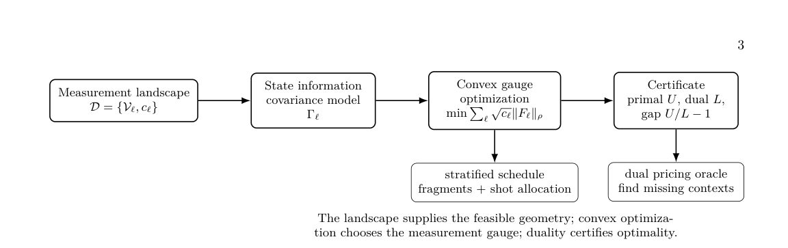
<figcaption class="paper-figure-caption"><b>Fig 1.</b> FIG. 1. Measurement reduction as geometry plus optimization. The allowed contexts define visible subspaces. A covariance model, obtained from a proxy state or from pilot data, turns each visible subspace into a variance norm. The optimal decomposition and shot allocation are obtained by a conic program. The dual returns a certificate that lower-bounds every schedule in the declared landscape and, through column generation, identifies whether useful contexts are missing.</figcaption>
</figure>
</div>

<p><strong>Summary.</strong> This paper presents a comprehensive theoretical framework for optimizing quantum measurement reduction by estimating observable expectation values. It tackles the problem using a combination of Second-Order Cone Programming (SOCP) for continuous allocation and advanced global optimization techniques for dictionary design. The key contribution is providing mathematically certified lower bounds on the required shot count, making resource estimation rigorous and verifiable.</p>
<p><strong>Why it may be interesting.</strong> This work provides rigorous, mathematically verifiable tools to determine the minimum required experimental resources (shots) needed to estimate quantum observables, moving beyond heuristic optimization methods common in quantum simulation and characterization.</p>
<details>
<summary>Detailed structure</summary>
<p><strong>Main problem.</strong> The core problem is optimizing quantum measurement reduction, which requires solving two coupled global optimization layers: an inner continuous shot allocation problem and an outer nonconvex dictionary design problem.</p>
<p><strong>Main result.</strong> The authors develop a framework that solves the inner layer certifiably using Second-Order Cone Programming (SOCP) and uses a robust optimizer (RANGE) for the outer layer, achieving significant compression of measurement dictionaries while maintaining certified optimality bounds.</p>
<p><strong>Method.</strong> The methodology combines convex optimization (SOCP) for shot allocation with adaptive global optimization (RANGE) for dictionary design. Crucially, it establishes verifiable lower-bound certificates via the conic dual and incorporates robust analysis using covariance sandwiching for finite-sample guarantees.</p>
<p><strong>Model / system.</strong> The theory applies to estimating expectation values $\langle H 
angle$ of observables $H$ in quantum systems. The measurement process is modeled by defining a dictionary of available contexts, each associated with a visible subspace and an estimated covariance model.</p>
<p><strong>Key observables.</strong> Minimum leading shot cost ($\Phi$), expected value $\langle H 
angle$, certified lower/upper bounds ($L, U$), and the required number of shots ($N_\ell$).</p>
<p><strong>Important parameters / regimes.</strong> Shot costs ($c_\ell$), measurement context definitions ($    ext{V}<em>\ell$), covariance matrices ($\Gamma</em>\ell$), and confidence parameters ($\delta$ for finite-sample bounds).</p>
<p><strong>Assumptions / limitations.</strong> The framework assumes the existence of a measurable dictionary of contexts. Robustness theorems address uncertainty in estimating the covariance matrices from pilot data.</p>
<p><strong>Figures summary.</strong> Figure 1 illustrates measurement reduction as a combination of geometric constraints (visible subspaces) and optimization, with the dual providing a certificate bounding all possible schedules.</p>
<p><strong>Paper structure.</strong> The paper builds by first defining the two-layer optimization problem. It then solves the inner layer via SOCP, establishing the primal/dual relationship. Subsequent sections introduce robust analysis for finite samples using covariance bounds (Theorem 3 &amp; 4), culminating in a certified repair procedure to ensure mathematical validity.</p>
</details>
<details>
<summary>Abstract</summary>
<p>Quantum-measurement reduction contains two distinct global-optimization layers: a continuous problem of splitting an observable and allocating shots within a fixed measurement dictionary, and a nonconvex outer problem of designing the dictionary and calibrating its data-driven uncertainty model. We solve the inner layer globally and certifiably as a second-order cone program (SOCP), and use RANGE, a robust adaptive nature-inspired global optimizer, for the combinatorial and statistical outer layer. For any declared set of contexts, per-shot costs, score functions, and covariance model, the SOCP returns the minimum leading shot cost among unbiased linear stratified estimators. The conic dual supplies an independently checkable lower-bound witness; after feasibility repair, an external verifier recomputes $L \le Φ\le U$ from stored data without trusting the optimizer. Pilot measurements yield simultaneous finite-sample covariance brackets, and the dual becomes a pricing oracle for omitted contexts. Discrete RANGE searches covering sub-dictionaries, Pareto compression fronts, and candidate contexts; continuous RANGE performs an explicitly empirical, coverage-constrained calibration of covariance-radius models, while rigorous certificates retain the proved finite-sample radius. RANGE compresses molecular context dictionaries by 4.3-6.1x at 0.2-2.1% certified-frontier excess. Standard strategies are exactly optimal for H2 yet leave factors of 2.1-7.7 in shots within their own settings by H2O. Adding fully commuting contexts lowers the certified optimum by up to 56%; on 29-35-qubit production f-element Hamiltonians under a declared Hartree-Fock-proxy covariance model, the capped-dictionary enlargement saves 31-70% of the shots, and transformations reducing block-encoding cost need not reduce sampling cost.</p>
</details>
<p><sub><a href="#top">↑ back to top</a></sub></p>

<p><a id="paper-2607.18196"></a></p>
<h3 id="hardware-robustness-of-sample-based-quantum-diagonalization"><a href="http://arxiv.org/abs/2607.18196v1">Hardware Robustness of Sample-Based Quantum Diagonalization</a></h3>
<p><strong>Authors:</strong> Ahatesham Bhuiyan, Cheng Chu, Qian Lou, Mengxin Zheng<br>
<strong>Type:</strong> both · <strong>Category:</strong> strongly correlated electrons · <strong>PDF:</strong> <a href="https://arxiv.org/pdf/2607.18196v1">https://arxiv.org/pdf/2607.18196v1</a><br>
<strong>Analysis basis:</strong> full PDF text, analyzed in chunks
<strong>Topic relevance:</strong> 🔥 <code>QC/QI experiment</code> <strong>4/5</strong> · <code>methods for driven-dissipative</code> <strong>1/5</strong></p>
<div class="figure-strip-hint">↔ Scroll figures horizontally</div>
<div class="paper-figures-scroll">
<figure class="paper-figure-card">
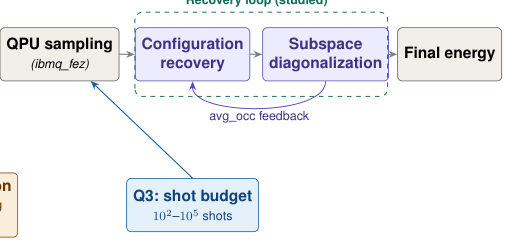
<figcaption class="paper-figure-caption"><b>Fig 1.</b> Fig. 1. SQD workflow and the three robustness probes (Q1–Q3) analyzed in this work.</figcaption>
</figure>
<figure class="paper-figure-card">
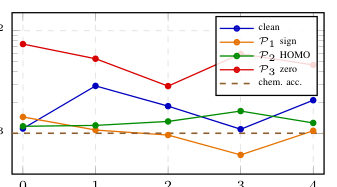
<figcaption class="paper-figure-caption"><b>Fig 2.</b> Fig. 2. H2O SQD error under structured t2 perturbations.</figcaption>
</figure>
<figure class="paper-figure-card">
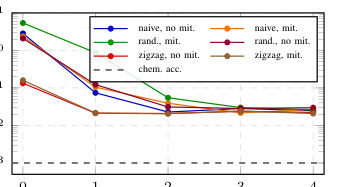
<figcaption class="paper-figure-caption"><b>Fig 3.</b> Fig. 3. N2 SQD error across layout and mitigation settings.</figcaption>
</figure>
<figure class="paper-figure-card">
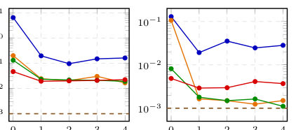
<figcaption class="paper-figure-caption"><b>Fig 4.</b> Fig. 4. SQD energy error vs. recovery-loop iteration on ibmq_fez for N2 (a) and H2O (b) at four shot budgets.</figcaption>
</figure>
</div>

<p><strong>Summary.</strong> This paper rigorously tests the operational robustness of Sample-based Quantum Diagonalization (SQD) for calculating molecular energies using real quantum hardware. By systematically varying initial conditions, qubit layouts, and sample sizes, the authors show that the self-consistent recovery loop effectively mitigates many expected sources of noise and error. The findings provide crucial guidelines on when and how SQD can reliably be deployed in practice.</p>
<p><strong>Why it may be interesting.</strong> This work is highly relevant as it directly tests the viability of quantum algorithms for chemistry on near-term, noisy hardware by quantifying how much classical post-processing can salvage results from imperfect quantum measurements.</p>
<details>
<summary>Detailed structure</summary>
<p><strong>Main problem.</strong> The study assesses the hardware robustness of Sample-based Quantum Diagonalization (SQD), a hybrid quantum-classical method used for estimating molecular ground-state energies.</p>
<p><strong>Main result.</strong> SQD demonstrates genuine deployment robustness, as errors from classical input perturbations and variations in qubit layout diminish significantly after only a few self-consistent recovery iterations. Furthermore, accuracy saturates at moderate shot budgets rather than improving indefinitely with more samples.</p>
<p><strong>Method.</strong> The authors analyze SQD by subjecting it to three probes: perturbing initial CCSD amplitudes (Q1), varying hardware choices like qubit layouts and noise mitigation (Q2), and scaling the QPU shot budget (Q3).</p>
<p><strong>Model / system.</strong> The calculations model electronic structure for small molecules ($  ext{BeH}_2$, $  ext{H}_2    ext{O}$, $  ext{N}_2$) using the Local Unitary Cluster Jastrow (LUCJ) ansatz, initialized by CCSD amplitudes. The work is performed on IBM Heron hardware.</p>
<p><strong>Key observables.</strong> The primary observable is the final recovered energy error ($\Delta E = |	ext{E}_{	ext{SQD}} - 	ext{ECASCI}|$) after a fixed number of recovery iterations ($T=5$).</p>
<p><strong>Important parameters / regimes.</strong> Key parameters include the CCSD amplitude perturbations (e.g., zeroing $t_2$), qubit layout types (naive, randomized, zigzag), noise mitigation status, and the QPU shot budget ($    ext{Nshots}$).</p>
<p><strong>Assumptions / limitations.</strong> The analysis assumes that the final energy accuracy depends on whether the recovered subspace contains important determinants rather than solely on raw sample quality.</p>
<p><strong>Figures summary.</strong> Figures illustrate how the energy error evolves across recovery iterations under structured amplitude perturbations (Fig. 2) and show post-recovery errors comparing different hardware configurations for $   ext{N}_2$ (Fig. 3).</p>
<p><strong>Paper structure.</strong> The paper introduces SQD, details its application to molecular electronic structure using LUCJ/CCSD, and then systematically analyzes robustness across three dimensions: classical input perturbations (Q1), hardware choices (Q2), and shot budget scaling (Q3), concluding with an assessment of the method's practical limits.</p>
</details>
<details>
<summary>Abstract</summary>
<p>Sample-based Quantum Diagonalization (SQD) is a hybrid quantum-classical method that replaces variational optimization with a self-consistent recovery loop over QPU samples. Although SQD is considered robust to noisy samples and imperfect classical inputs, its robustness across practical deployment choices has not been systematically analyzed. As a result, shot budgets, qubit layouts, noise mitigation strategies, and the coupled-cluster singles and doubles (CCSD) amplitudes that initialize the ansatz are often chosen without clear empirical guidance. We analyze SQD robustness on IBM Heron hardware across these dimensions. Structured CCSD-amplitude perturbations, including complete zeroing, produce only modest energy shifts from the clean baseline. Differences across layouts and noise-mitigation settings are large in the first recovery iteration but narrow within a few iterations. Accuracy saturates at moderate shot budgets, while very large budgets slightly worsen recovered energies, likely because working-set selection limits the value of additional samples. These results identify where SQD provides genuine deployment robustness and where its limits remain.</p>
</details>
<p><sub><a href="#top">↑ back to top</a></sub></p>

<p><a id="paper-2607.17705"></a></p>
<h3 id="image-classification-on-ibm-quantum-computers"><a href="http://arxiv.org/abs/2607.17705v1">Image Classification on IBM Quantum Computers</a></h3>
<p><strong>Authors:</strong> Junghoon Justin Park, Jiook Cha, Jun-gyeong Park, Hwidong Yoo, Kwangmin Yu<br>
<strong>Type:</strong> experiment · <strong>Category:</strong> quantum information and computing · <strong>PDF:</strong> <a href="https://arxiv.org/pdf/2607.17705v1">https://arxiv.org/pdf/2607.17705v1</a><br>
<strong>Analysis basis:</strong> full PDF text, analyzed in chunks
<strong>Topic relevance:</strong> 🔥 <code>QC/QI experiment</code> <strong>4/5</strong> · <code>methods for driven-dissipative</code> <strong>1/5</strong></p>
<div class="figure-strip-hint">↔ Scroll figures horizontally</div>
<div class="paper-figures-scroll">
<figure class="paper-figure-card">
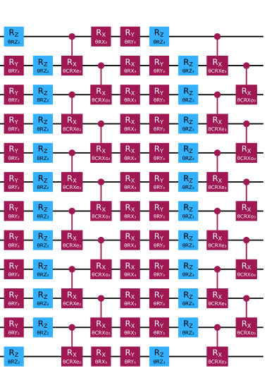
<figcaption class="paper-figure-caption"><b>Fig 1.</b> Fig. 1: Logical VQC ZigZag circuit (nq = 12, L = 3): a Y -axis angle embedding (RY ) of the encoder output, then L layers of single-qubit RX, RY , RZ rotations and two brick-wall CRX sublayers (even then odd adjacent pairs, no wrap-around), and a Pauli-Z readout on all 12 qubits. Gate labels are symbolic rather than numerical: zi is the encoder output angle applied to qubit i (twelve distinct, sample-dependent values), and θ(ℓ) RX, θ(ℓ) RY , θ(ℓ) RZ, θ(ℓ) CRX,even, θ(ℓ) CRX,odd are the five trainable angles of layer ℓ; the figure carries the layer index as a subscript and abbreviates the even- and odd-pair sublayers as e and o. Each angle is shared across all twelve qubits of its layer,...</figcaption>
</figure>
<figure class="paper-figure-card">
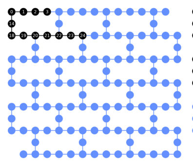
<figcaption class="paper-figure-caption"><b>Fig 2.</b> Fig. 2: Pinned physical-qubit layout on the ibm yonsei heavy-hex topology (high- lighted = active). (a) K = 1 runs use Circuit 1; (b) K = 4 QMP concatenates four routing-disconnected 12-qubit circuits with no inter-circuit coupling. Circuit 1 (the K = 1 layout) is reused as the first of the four circuits.</figcaption>
</figure>
<figure class="paper-figure-card">
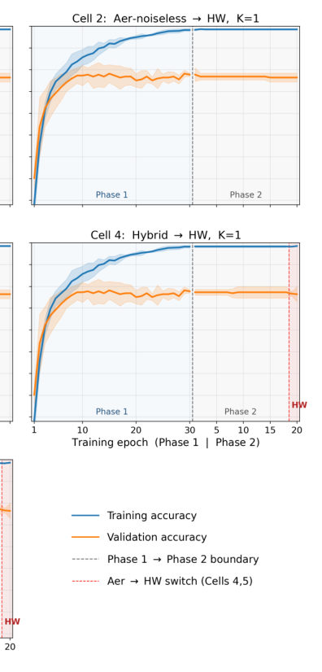
<figcaption class="paper-figure-caption"><b>Fig 3.</b> Fig. 3: Two-phase training curves for VQC ZigZag (12q/3L, MNIST 350/75/75; mean ± s.d. over three seeds). Phase 1 (Adam, 30 epochs, classical layers) raises validation accuracy to ∼78%, while Phase 2 (COBYLA, 20 epochs, quantum parameters) is essentially flat in every cell. The red dashed line marks the Aer →hardware switch at Phase 2 epoch 19 for the hybrid-trained Cells 4–5. The flat Phase 2 traces visualize the central result of Claim 3: gradient-free quantum-parameter optimization, whether on a simulator or on hardware, does not move the classification decisions.</figcaption>
</figure>
</div>

<p><strong>Summary.</strong> This paper demonstrates a practical workflow for running multi-class image classification using variational quantum circuits on current NISQ hardware. By proposing a two-phase training protocol and implementing Quantum Multi-Programming, the authors significantly boost inference throughput while concluding that classical simulation should handle training, reserving expensive hardware time only for forward passes.</p>
<p><strong>Why it may be interesting.</strong> While focused on ML, the core technical contributions—decoupling optimization steps and maximizing device utilization via multi-programming—are highly relevant to developing robust quantum algorithms for near-term devices.</p>
<details>
<summary>Detailed structure</summary>
<p><strong>Main problem.</strong> The primary challenge is demonstrating a feasible, high-throughput workflow for multi-class Quantum Machine Learning (QML) on current Noisy Intermediate-Scale Quantum (NISQ) hardware.</p>
<p><strong>Main result.</strong> The authors established an 'inference-only' workflow: training classically and reserving the quantum processor solely for inference. They achieved significant throughput gains using Quantum Multi-Programming without sacrificing accuracy.</p>
<p><strong>Method.</strong> A two-phase hybrid protocol was used, decoupling classical optimization from gradient-free quantum parameter optimization (COBYLA). Inference efficiency was boosted by packing multiple circuit copies onto one job submission.</p>
<p><strong>Model / system.</strong> The work uses a variational quantum classifier applied to the ten-class MNIST dataset on an IBM 127-qubit Eagle processor. The model architecture is a hybrid classical-quantum structure utilizing a VQC ZigZag ansatz.</p>
<p><strong>Key observables.</strong> Classification accuracy (compared to classical MLP), end-to-end wall time/throughput, and circuit metrics like depth and CNOT count.</p>
<p><strong>Important parameters / regimes.</strong> The system size involves 12 qubits ($n_q=12$) for the quantum module. The key operational parameters are the packing factor $K$ (e.g., $K=4$).</p>
<p><strong>Assumptions / limitations.</strong> The work assumes that training on hardware is prohibitively expensive and yields no measurable accuracy benefit over simulator training, thus necessitating an inference-only workflow.</p>
<p><strong>Figures summary.</strong> Figure 3 illustrates the flat optimization loss during Phase 2 (quantum parameter tuning), showing no movement in classification decisions when switching from simulation to hardware. Other figures detail circuit structures and performance metrics for varying $K$.</p>
<p><strong>Paper structure.</strong> The paper follows a structure of identifying limitations (training cost, low throughput) $
ightarrow$ proposing novel protocols (two-phase training, QMP) $
ightarrow$ validating the workflow on real hardware $
ightarrow$ concluding that classical simulation/hardware inference separation is the practical path forward.</p>
</details>
<details>
<summary>Abstract</summary>
<p>Quantum machine learning on real noisy intermediate-scale quantum (NISQ) hardware has remained largely confined to binary or few-class tasks, limited by the cost of on-hardware training and the underuse of large devices at inference. We present a unified framework that classifies ten-class MNIST end-to-end on a $127$-qubit IBM Eagle processor, with three central contributions. First, a two-phase protocol decouples a gradient-based classical optimization of the encoder and readout from a gradient-free optimization of the quantum parameters, removing the parameter-shift gradient cost that makes on-hardware training impractical. Second, we introduce Quantum Multi-Programming to a trained quantum classifier for the first time, packing multiple circuit copies onto one device to deliver parallel inference at no mean-accuracy cost while cutting quantum-processor job submissions proportionally. Third, a controlled comparison shows that on-hardware fine-tuning yields no measurable accuracy gain, motivating a practical NISQ workflow: train on a classical simulator and reserve the hardware for inference only. Benchmarked against a matched-capacity classical network, the quantum module shows no per-parameter accuracy advantage at this scale; we therefore frame the work as a feasibility-and-workflow demonstration for multi-class quantum image classification on current hardware.</p>
</details>
<p><sub><a href="#top">↑ back to top</a></sub></p>

<p><a id="paper-2607.16878"></a></p>
<h3 id="bargmann-invariants-and-local-unitary-equivalence"><a href="http://arxiv.org/abs/2607.16878v1">Bargmann invariants and local unitary equivalence</a></h3>
<p><strong>Authors:</strong> Minghui Ma, Rui Shi<br>
<strong>Type:</strong> theory · <strong>Category:</strong> quantum information and computing · <strong>PDF:</strong> <a href="https://arxiv.org/pdf/2607.16878v1">https://arxiv.org/pdf/2607.16878v1</a><br>
<strong>Analysis basis:</strong> full PDF text, analyzed in chunks
<strong>Topic relevance:</strong> 🔥 <code>entanglement &amp; information structure</code> <strong>4/5</strong></p>
<div class="figure-strip-hint">↔ Scroll figures horizontally</div>
<div class="paper-figures-scroll">
<figure class="paper-figure-card">
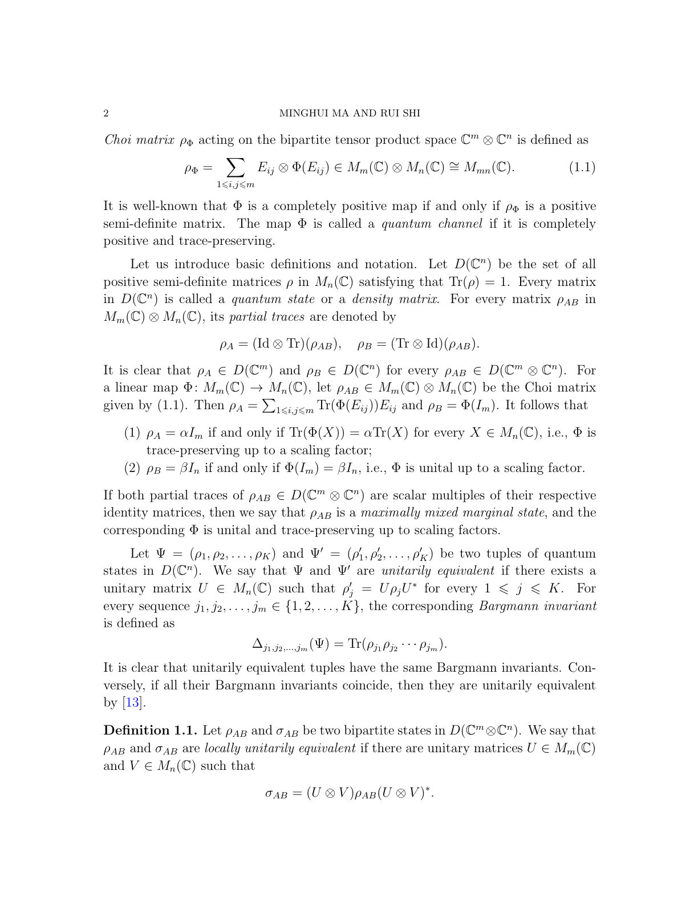
<figcaption class="paper-figure-caption"><b>Fig 1.</b> Low-resolution page preview, page 2</figcaption>
</figure>
<figure class="paper-figure-card">
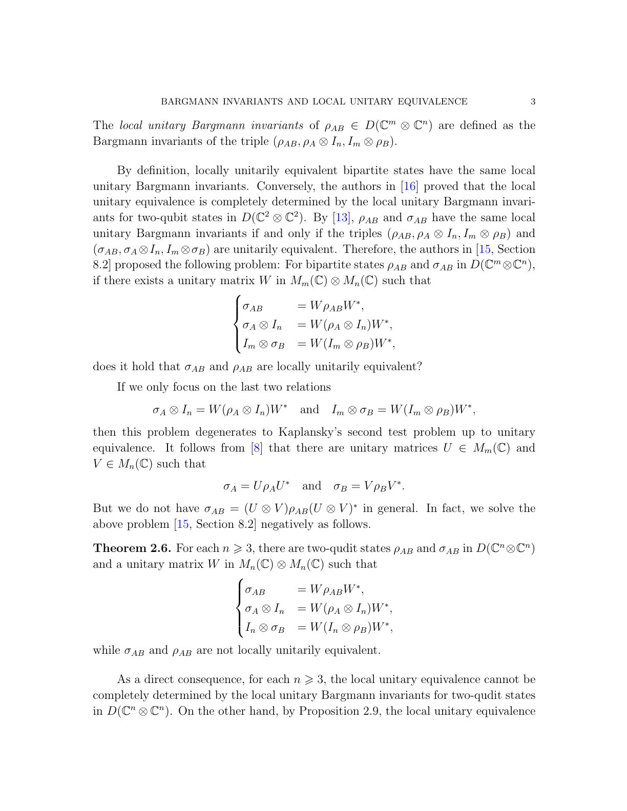
<figcaption class="paper-figure-caption"><b>Fig 2.</b> Low-resolution page preview, page 3</figcaption>
</figure>
<figure class="paper-figure-card">
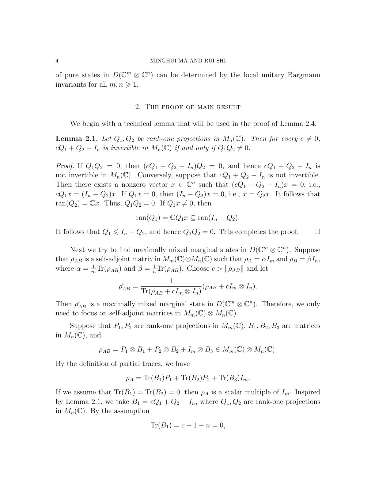
<figcaption class="paper-figure-caption"><b>Fig 3.</b> Low-resolution page preview, page 4</figcaption>
</figure>
<figure class="paper-figure-card">
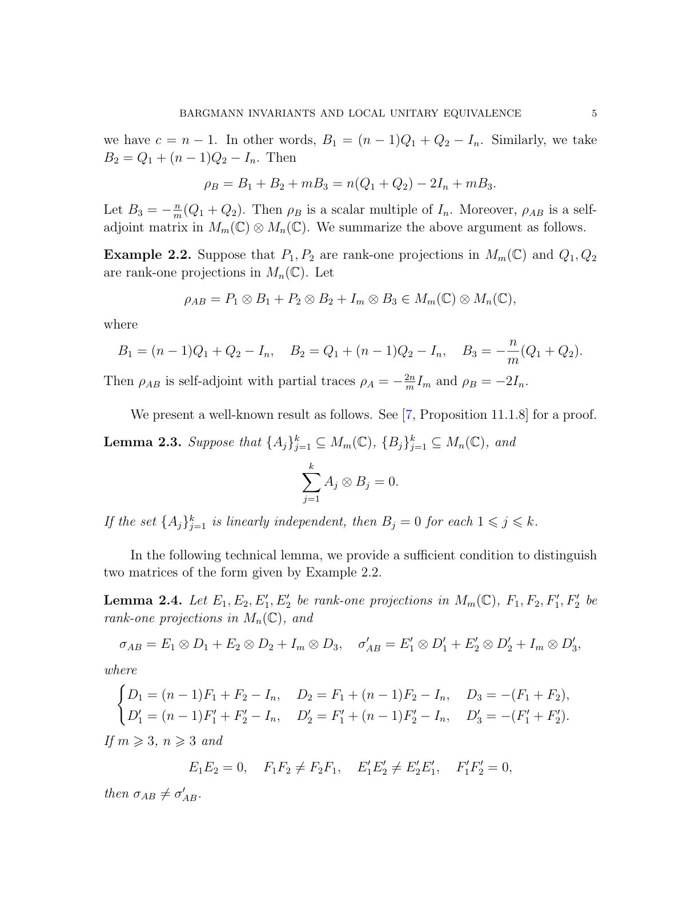
<figcaption class="paper-figure-caption"><b>Fig 4.</b> Low-resolution page preview, page 5</figcaption>
</figure>
<figure class="paper-figure-card">
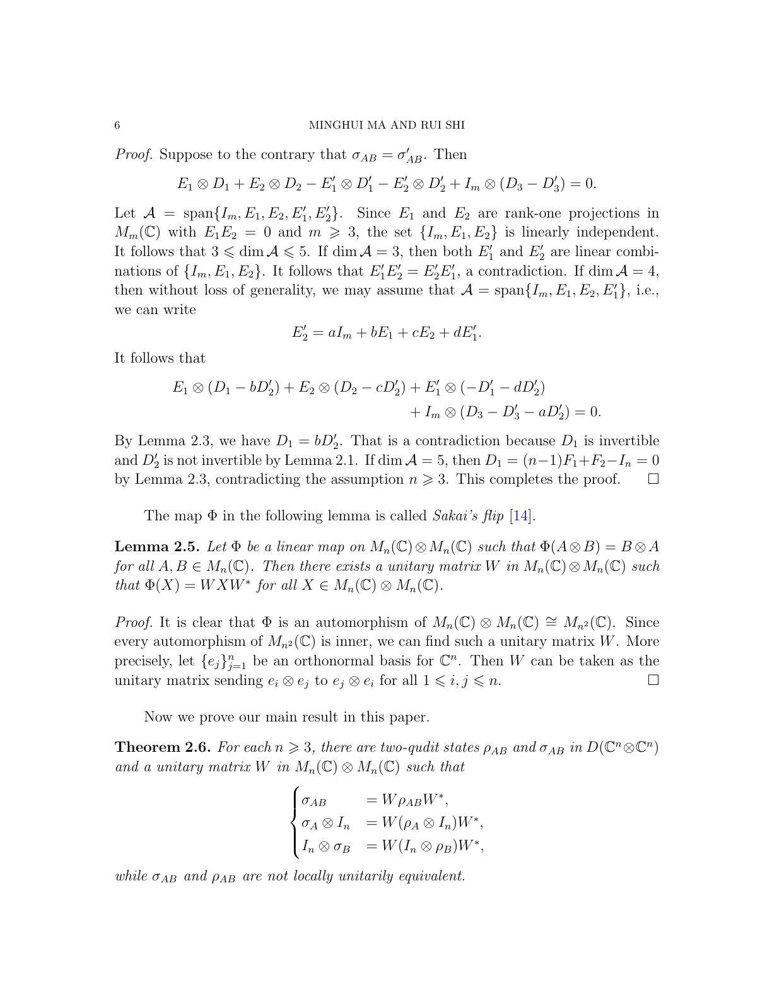
<figcaption class="paper-figure-caption"><b>Fig 5.</b> Low-resolution page preview, page 6</figcaption>
</figure>
</div>

<p><strong>Summary.</strong> This paper investigates the relationship between local unitary equivalence and Bargmann invariants for bipartite quantum states. While the invariants fully characterize two-qubit states ($n=2$), the authors prove that this fails for larger systems ($n \ge 3$) by constructing counterexamples. The result highlights that while global unitaries can relate states, local unitaries impose stricter constraints not captured solely by these specific invariant measures.</p>
<p><strong>Why it may be interesting.</strong> This work provides fundamental theoretical boundaries on how much information (invariants) is needed to classify quantum states under local operations, a core concept in characterizing entanglement and resource theories relevant to quantum computation.</p>
<details>
<summary>Detailed structure</summary>
<p><strong>Main problem.</strong> The central problem is determining when the local unitary equivalence of a bipartite quantum state ($
ho_{AB}$) is completely characterized by its local unitary Bargmann invariants, especially for systems larger than two qubits ($n \ge 3$).</p>
<p><strong>Main result.</strong> The authors disprove the conjecture that local unitary orbits are fully determined by these invariants for $n \ge 3$, providing explicit counterexamples. However, they show that if the state is pure, equivalence <em>is</em> guaranteed.</p>
<p><strong>Method.</strong> The proof involves constructing specific counterexamples using rank-one projections to define pairs of states ($
ho_{AB}, \sigma_{AB}$) that are related by a global unitary transformation but fail to be locally unitarily equivalent.</p>
<p><strong>Model / system.</strong> The study focuses on bipartite quantum states $
ho_{AB}$ defined on the Hilbert space $\mathbb{C}^n \otimes \mathbb{C}^n$ (two-qudit systems). The analysis revolves around the action of the local unitary group ($U \otimes V$).</p>
<p><strong>Key observables.</strong> Local unitary equivalence, and the values derived from the local unitary Bargmann invariants ($    ext{Tr}(
ho_{j_1}\cdots
ho_{j_m})$).</p>
<p><strong>Important parameters / regimes.</strong> $n$ (the dimension of the subsystems), with special attention paid to the transition between $n=2$ and $n \ge 3$.</p>
<p><strong>Assumptions / limitations.</strong> The analysis relies on comparing states related by a global unitary transformation ($W$) versus those related only by local unitaries.</p>
<p><strong>Paper structure.</strong> The paper first establishes the known result for $n=2$ (complete determination by invariants). It then proceeds to construct counterexamples in Theorem 2.6 for $n \ge 3$, demonstrating the failure of the conjecture, before concluding with Proposition 2.9 which restores equivalence for pure states.</p>
</details>
<details>
<summary>Abstract</summary>
<p>In this paper, we study the local unitary equivalence of quantum states on $\mathbb{C}^n\otimes\mathbb{C}^n$, which is an important notion in quantum information theory. For the case $n=2$, the local unitary orbits of two-qubit states are completely determined by their local unitary Bargmann invariants. We show that the local unitary Bargmann invariants do not form a complete set of invariants of local unitary orbits for $n\geqslant 3$, which negatively answers a problem proposed by L. Zhang and B. Xie.</p>
</details>
<p><sub><a href="#top">↑ back to top</a></sub></p>

<p><a id="paper-2607.16960"></a></p>
<h3 id="entanglement-quantification-via-symmetric-extensions-a-resource-theory-hierarchy"><a href="http://arxiv.org/abs/2607.16960v1">Entanglement Quantification via Symmetric Extensions: A Resource Theory Hierarchy</a></h3>
<p><strong>Authors:</strong> Enmin Shao, Lin Chen, Huixia He<br>
<strong>Type:</strong> theory · <strong>Category:</strong> quantum information and computing · <strong>PDF:</strong> <a href="https://arxiv.org/pdf/2607.16960v1">https://arxiv.org/pdf/2607.16960v1</a><br>
<strong>Analysis basis:</strong> full PDF text, analyzed in chunks
<strong>Topic relevance:</strong> 🔥 <code>entanglement &amp; information structure</code> <strong>4/5</strong></p>
<div class="figure-strip-hint">↔ Scroll figures horizontally</div>
<div class="paper-figures-scroll">
<figure class="paper-figure-card">
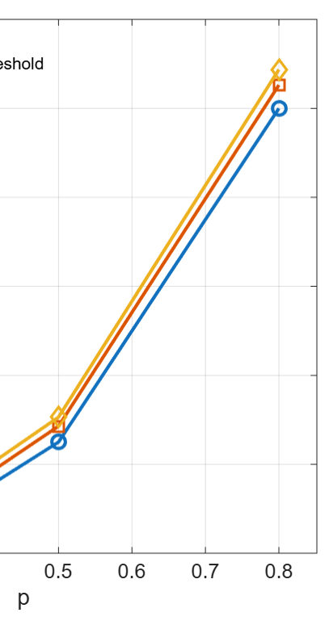
<figcaption class="paper-figure-caption"><b>Fig 1.</b> FIG. 1: Ek vs p for the 3 × 3 Werner state. The dashed line marks the separability threshold p = 1/4.</figcaption>
</figure>
<figure class="paper-figure-card">
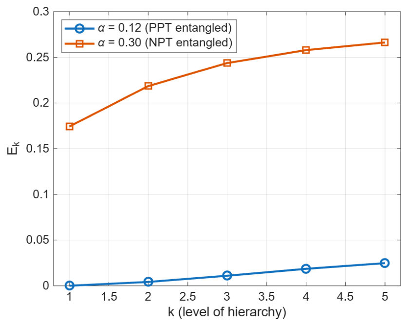
<figcaption class="paper-figure-caption"><b>Fig 2.</b> FIG. 2: Ek vs k for the d = 10 isotropic state. The blue curve corresponds to the PPT entangled case (α = 0.12), while the red curve corresponds to the NPT entangled case (α = 0.30).</figcaption>
</figure>
<figure class="paper-figure-card">
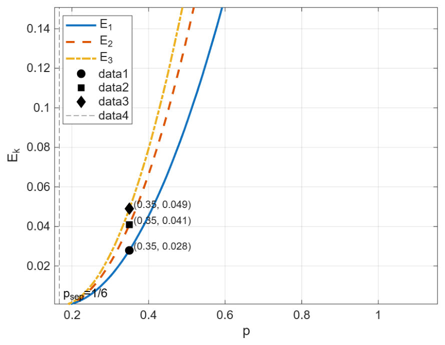
<figcaption class="paper-figure-caption"><b>Fig 3.</b> FIG. 3: The hierarchy of measures Ek for the 5 × 5 Werner state as a function of p. The curves are ordered as E1 ≤E2 ≤E3, and they all vanish for p ≤psep = 1/6. The solid points mark the typical point p = 0.35, where we obtain E1 = 0.028, E2 = 0.041, and E3 = 0.049.</figcaption>
</figure>
<figure class="paper-figure-card">
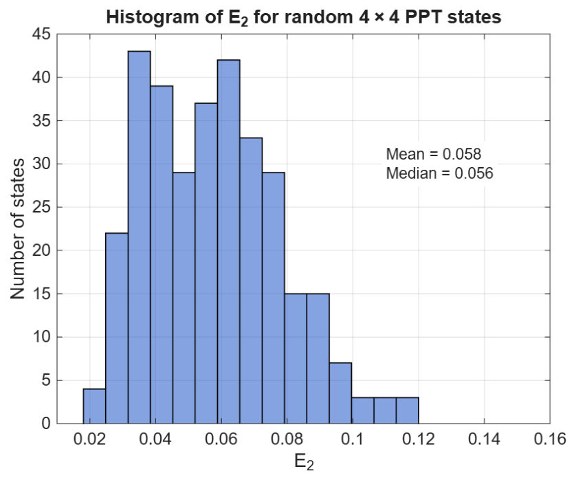
<figcaption class="paper-figure-caption"><b>Fig 4.</b> FIG. 4: Histogram of E2 for 324 random 4 × 4 PPT states. All these states have E1 = 0 and E2 &gt; 0, with values ranging from approximately 0.02 to 0.15. This demonstrates that a substantial fraction of random PPT states carry a positive E2 resource.</figcaption>
</figure>
</div>

<p><strong>Summary.</strong> The paper introduces an entanglement measure hierarchy, $E_k$, derived from extending the Positive Partial Transpose (PPT) condition using $k$-symmetric extensions. This framework provides a quantifiable resource yardstick that strictly refines existing measures and successfully detects bound entangled states where simpler methods fail. By leveraging SDP duality, it offers both theoretical rigor and practical computational scalability.</p>
<p><strong>Why it may be interesting.</strong> This work provides a powerful theoretical tool for quantifying entanglement resources in a systematically improvable manner, directly addressing fundamental open problems regarding bound entanglement that are crucial for understanding quantum correlations beyond simple separability criteria.</p>
<details>
<summary>Detailed structure</summary>
<p><strong>Main problem.</strong> The primary goal is to develop a systematically improvable resource-theoretic measure for quantifying quantum entanglement that overcomes the limitations of existing measures, such as PPT-robustness, especially concerning bound entangled states.</p>
<p><strong>Main result.</strong> The authors introduce a hierarchy of measures, $E_k$, based on $k$-symmetric PPT extensions. This hierarchy is proven to be faithful and strictly refines previous bounds, converging exactly to the true separability measure as $k 	o \infty$.</p>
<p><strong>Method.</strong> The measures are defined using Semidefinite Programming (SDP) by characterizing the set of 'free states' ($F_k$) via $k$-symmetric PPT extensions. A dual formulation utilizing witness operators provides a computationally efficient alternative to solving the full primal SDP.</p>
<p><strong>Model / system.</strong> The framework applies to bipartite quantum systems ($
ho_{AB}$) and involves extending the state space using $k$ copies of one subsystem ($H_A \otimes H_{B_1} \otimes \cdots \otimes H_{B_k}$). The analysis is tested on standard states like Werner, Horodecki, and UPB states.</p>
<p><strong>Key observables.</strong> The entanglement measure $E_k(
ho)$, the set of free states $F_k$, and the limit measure $E_{SEP}(
ho)$.</p>
<p><strong>Important parameters / regimes.</strong> The integer parameter $k$ controls the level of extension, ranging from $k=1$ (PPT-robustness) up to $\infty$.</p>
<p><strong>Assumptions / limitations.</strong> The analysis relies on the equivalence between primal and dual SDP formulations for computational tractability. The framework assumes LOCC operations are captured by the set of $k$-free operations $O_k$.</p>
<p><strong>Figures summary.</strong> Figures illustrate the strict monotonicity ($E_1 < E_2 < E_3$) of the measure hierarchy for Werner states and demonstrate that bound entangled states yield non-zero values for $E_k$ when $k \ge 2$, while $E_1=0$.</p>
<p><strong>Paper structure.</strong> The paper introduces the concept via $k$-symmetric PPT extensions, defines the measure $E_k$ using both primal and dual SDP formulations, proves its desirable properties (convexity, monotonicity), establishes the convergence to the separability measure, and finally validates the framework computationally on various entangled state examples.</p>
</details>
<details>
<summary>Abstract</summary>
<p>We introduce a hierarchy of entanglement measures Ek based on k-symmetric PPT extensions. Each Ek, defined via a minimal eigenvalue shift and computed by semidefinite programming, is faithful, convex, and monotone under free operations. The hierarchy strictly refines PPT-robustness at k = 1, detects bound entanglement at k = 2, and converges exactly to the separability measure as k -&gt; infinity. Numerical experiments on Horodecki, Werner, UPB, and random states demonstrate practical scalability. Our framework unifies computational efficiency with operational fidelity in a single tunable family -- a combination previously believed to be fundamentally incompatible in entanglement quantification. It supplies, for the first time, a systematically improvable resource-theoretic yardstick that accounts for all entangled states, including the bound entangled ones that have long resisted quantitative treatment.</p>
</details>
<p><sub><a href="#top">↑ back to top</a></sub></p>

<p><a id="paper-2607.18137"></a></p>
<h3 id="phase-sensitive-benchmarking-of-composite-quantum-gates-with-chiral-interference-circuits-on-quantum-hardware"><a href="http://arxiv.org/abs/2607.18137v1">Phase-Sensitive Benchmarking of Composite Quantum Gates with Chiral-Interference Circuits on Quantum Hardware</a></h3>
<p><strong>Authors:</strong> Georgi M. Aleksandrov, Nikolay V. Vitanov<br>
<strong>Type:</strong> experiment · <strong>Category:</strong> quantum information and computing · <strong>PDF:</strong> <a href="https://arxiv.org/pdf/2607.18137v1">https://arxiv.org/pdf/2607.18137v1</a><br>
<strong>Analysis basis:</strong> full PDF text, analyzed in chunks
<strong>Topic relevance:</strong> 🔥 <code>QC/QI experiment</code> <strong>4/5</strong></p>
<div class="figure-strip-hint">↔ Scroll figures horizontally</div>
<div class="paper-figures-scroll">
<figure class="paper-figure-card">
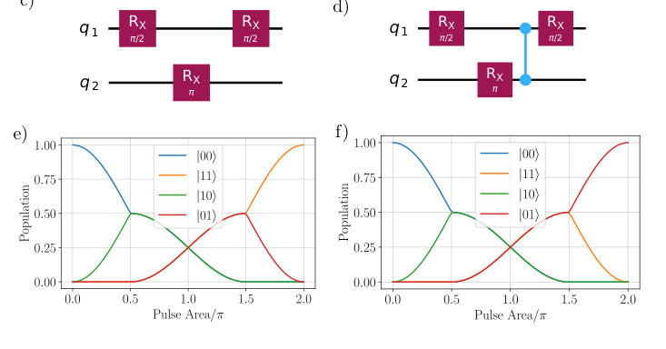
<figcaption class="paper-figure-caption"><b>Fig 1.</b> FIG. 1. (a),(b) Interferometric scheme of the four-level model, with positive and negative signs of the loop coupling for the S- and R-circuits, respectively. (c),(d) Corresponding reduced quantum circuits. (e),(f) Ideal population evolution for the S- and R-circuits.</figcaption>
</figure>
<figure class="paper-figure-card">
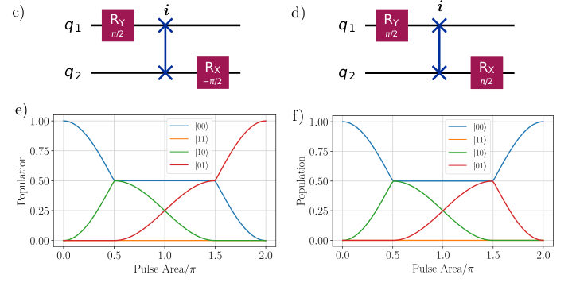
<figcaption class="paper-figure-caption"><b>Fig 2.</b> FIG. 2. (a),(b) Interferometric scheme of the three-level model, with positive and negative signs of the loop coupling for the S- and R-circuits, respectively. (c),(d) Corresponding iSWAP-based quantum circuits. (e),(f) Ideal population evolution for the S- and R-circuits.</figcaption>
</figure>
<figure class="paper-figure-card">
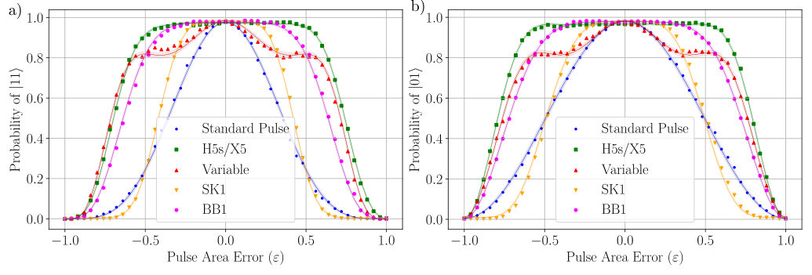
<figcaption class="paper-figure-caption"><b>Fig 3.</b> FIG. 3. Target-state populations of the (a) S and (b) R circuits of the four-level circuit as functions of the correlated rotation- angle error ε. Elementary rotations are compared with H5s/X5, B5 variable rotations, SK1, and BB1. The points are hardware data from ibm kingston; the solid lines are scaled theoretical predictions and the shaded bands represent twice the shot-noise uncertainty.</figcaption>
</figure>
<figure class="paper-figure-card">
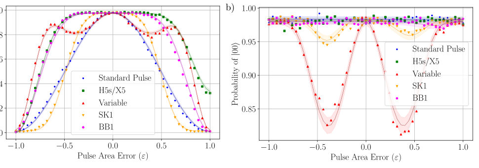
<figcaption class="paper-figure-caption"><b>Fig 4.</b> FIG. 4. Target-state populations of the (a) S and (b) R branches of the three-level circuit as functions of the correlated rotation-angle error ε. The target states are |01⟩and |00⟩, respectively. Elementary pulses are compared with H5s, variable rotation, SK1 and BB1 composite π/2 rotations. For the R enantiomer, elementary pulses exhibit exact cancellation of the common rotation-angle error. For composite replacements, this protection persists only when the final erroneous composite propagator is the exact inverse of the transported first propagator; asymmetric sequences can break this condition.</figcaption>
</figure>
</div>

<p><strong>Summary.</strong> The paper experimentally benchmarks composite quantum gates using chiral-interference circuits to test error resilience. By introducing systematic rotation errors, the authors demonstrate that single-gate performance does not guarantee overall circuit robustness. They show that specific constant composite sequences maintain coherence far better than variable ones when facing correlated noise.</p>
<p><strong>Why it may be interesting.</strong> This work directly addresses the gap between local gate fidelity and global circuit robustness, which is crucial for designing fault-tolerant quantum algorithms that rely on complex interferometry or state preparation protocols.</p>
<details>
<summary>Detailed structure</summary>
<p><strong>Main problem.</strong> The study benchmarks composite quantum gates by using phase-sensitive circuits that simulate chiral-interference protocols to test if single-gate robustness guarantees whole-circuit robustness.</p>
<p><strong>Main result.</strong> Single-gate robustness does not translate to equivalent whole-circuit robustness, as variable-rotation sequences fail to preserve required relative phases for error correction. Constant composite rotations (H5s/X5) showed significantly higher resilience to systematic errors than elementary rotations.</p>
<p><strong>Method.</strong> The authors implemented two gate-native circuits (three- and four-level) on an IBM quantum processor, systematically introducing rotation-angle errors ($\epsilon$) into single-qubit operations for comparison.</p>
<p><strong>Model / system.</strong> The models simulate chiral state transfer using two qubits. The four-level circuit uses a conditional phase gate, while the three-level circuit models enantioselective population transfer. The benchmarking compares variable vs. constant composite rotation sequences.</p>
<p><strong>Key observables.</strong> Enantiomer-dependent output state populations (achieving $\approx 98\%$ fidelity), and the maintenance of high target-state populations under varying relative errors ($\epsilon$).</p>
<p><strong>Important parameters / regimes.</strong> Relative error magnitude (up to $50\%$), rotation angle error ($\epsilon$), and the specific gate sequences tested (B5, SK1, H5s, X5).</p>
<p><strong>Assumptions / limitations.</strong> The analysis assumes that CZ and iSWAP gates are perfect; the comparison isolates correlated coherent errors in single-qubit operations.</p>
<p><strong>Figures summary.</strong> Figure 1 illustrates the interferometric schemes for both four-level and three-level models, showing ideal population evolution diagrams corresponding to reduced quantum circuits.</p>
<p><strong>Paper structure.</strong> The paper first introduces the chiral-interference protocols (four- and three-level) as benchmarks. It then systematically compares the performance of various composite gate sequences under controlled rotation-angle errors, culminating in a detailed analysis comparing error scaling across different circuit types.</p>
</details>
<details>
<summary>Abstract</summary>
<p>We construct and experimentally implement compact gate-native circuits that simulate the state-transfer interference underlying three- and four-level chiral-resolution protocols. Both models are encoded in a two-qubit register, with the enantiomer-dependent sign of one of the couplings simulated by a conditional-phase operation in the four-level circuit and by the sign of a final rotation in the three-level circuit. On an IBM quantum processor, the two circuits produce the expected enantiomer-dependent output states with probabilities of nearly $98\%$. We then use these circuits as physically motivated, phase-sensitive benchmarks for composite quantum gates. We introduce rotation-angle error to the single-qubit operations and replace them by several composite gates, including B5, SK1, BB1, H5s, and X5. The comparison demonstrates that single-gate robustness does not translate to equivalent whole-circuit robustness. In particular, variable-rotation sequences do not preserve the required relative phases, making them unsuitable for error correction in circuits. By contrast, the H5s/X5 sequences maintain high target-state populations for relative errors as large as $50\%$, whereas elementary rotations reach the same threshold only for approximately $8\%$. The three-level circuit exhibits a similar enhancement and additionally reveals an error-cancellation symmetry whose protection under composite replacement is exact only when the relevant full propagators satisfy an inverse relation.</p>
</details>
<p><sub><a href="#top">↑ back to top</a></sub></p>

<p><a id="paper-2607.17104"></a></p>
<h3 id="distinct-reentrant-transitions-in-a-quasi-periodic-raman-lattice"><a href="http://arxiv.org/abs/2607.17104v1">Distinct reentrant transitions in a quasi-periodic Raman lattice</a></h3>
<p><strong>Authors:</strong> Xingbo Wei, Zhentian Xie, Tong Liu, Gao Xianlong, Yunbo Zhang<br>
<strong>Type:</strong> theory · <strong>Category:</strong> disordered systems and neural networks · <strong>PDF:</strong> <a href="https://arxiv.org/pdf/2607.17104v1">https://arxiv.org/pdf/2607.17104v1</a><br>
<strong>Analysis basis:</strong> full PDF text, analyzed in chunks
<strong>Topic relevance:</strong> <code>analog quantum simulation</code> <strong>3/5</strong> · <code>driven-dissipative phase transition</code> <strong>3/5</strong> · <code>methods for driven-dissipative</code> <strong>3/5</strong> · <code>Frenkel-Kontorova</code> <strong>2/5</strong> · <code>non-equilibrium dynamics</code> <strong>2/5</strong> · <code>non-equilibrium universality</code> <strong>2/5</strong> · <code>Keldysh / 2PI / non-Gaussian methods</code> <strong>1/5</strong> · <code>entanglement &amp; information structure</code> <strong>1/5</strong> · <code>exotic spin models in light-matter</code> <strong>1/5</strong> · <code>spintronics-quantum-optics interface</code> <strong>1/5</strong></p>
<div class="figure-strip-hint">↔ Scroll figures horizontally</div>
<div class="paper-figures-scroll">
<figure class="paper-figure-card">
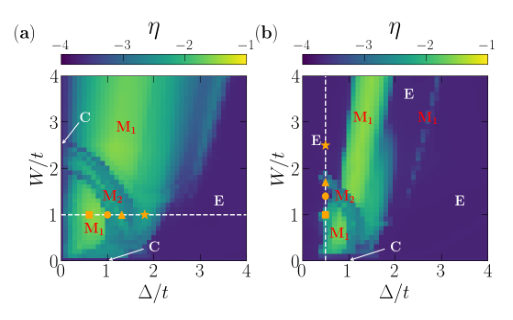
<figcaption class="paper-figure-caption"><b>Fig 1.</b> Figure 1. Phase diagrams in the W–∆plane for (a) V/t = 2.0 and (b) V/t = 1.4, respectively. Color indicates the value of η. White letter C (E) marks the purely critical phase (purely extended phase). M1 and M2 denote the mixed phases with- out and with anomalous mobility edges. White dotted lines mark W/t = 1 in (a) and ∆/t = 0.5 in (b). Orange markers in (a) and (b) indicate points further analyzed in Figs. 2–3 and Fig. 5, respectively. η is used only to distinguish pure and mixed phases. The distinction between pure phases relies on fractal dimensions, and colored dot markers indicate transi- tion points between different phases extracted from finite-size scaling analysis, see the...</figcaption>
</figure>
<figure class="paper-figure-card">
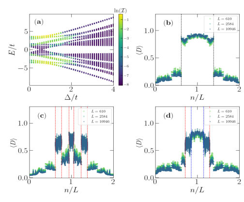
<figcaption class="paper-figure-caption"><b>Fig 2.</b> Figure 2. (a) Spectrum as a function of ∆, along the white dotted line in Fig. 1 (a). (b)–(d) Mean fractal dimension ⟨D⟩at various energy levels for ∆/t = 0.6, 1.0, and 1.3, as indicated by orange markers , , and in Fig. 1 (a), respec- tively. Other cases for ∆/t = 1.4, 1.8, and 3.0 are provided in the Supplemental Material [37]. Black dotted lines mark con- ventional mobility edges, whereas red and blue dotted lines denote two distinct classes of anomalous mobility edges.</figcaption>
</figure>
<figure class="paper-figure-card">
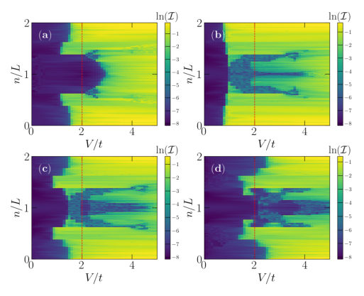
<figcaption class="paper-figure-caption"><b>Fig 3.</b> Figure 3. (a)–(d) The IPR associated with the energy level index as a function of V/t for W/t = 1 and ∆/t = 0.6, 1.0, 1.3, and 1.8, respectively. Red dotted lines mark V/t = 2, corresponding to orange markers , , , and in Fig. 1 (a).</figcaption>
</figure>
<figure class="paper-figure-card">
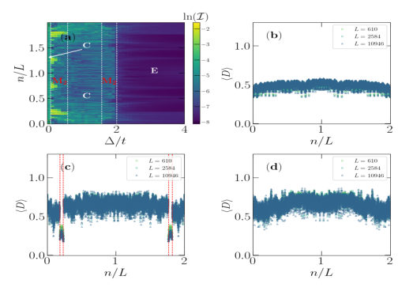
<figcaption class="paper-figure-caption"><b>Fig 4.</b> Figure 4. (a) IPR as a function of ∆for V/t = 2 and W/t = 0.01. (b)–(d) ⟨D⟩at various energy levels for ∆/t = 0.0, 0.4, and 0.8, respectively. Other parameters are the same as those in Fig. 1 (a). The white dotted lines in (a) mark boundaries between different phases, whereas the red dotted lines in (c) indicate anomalous mobility edges aME1.</figcaption>
</figure>
<figure class="paper-figure-card">
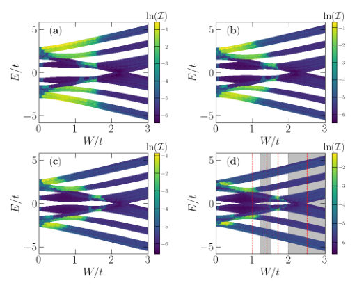
<figcaption class="paper-figure-caption"><b>Fig 5.</b> Figure 5. (a)–(d) Spectra as a function of W/t for ∆/t = 0.8, 0.7, 0.6 and 0.5, sliced from Fig. 1 (b). In (d), the gray regions mark purely extended phases E and red dotted lines correspond to orange markers , , , and in Fig. 1 (b)</figcaption>
</figure>
</div>

<p><strong>Summary.</strong> This work investigates the complex phase diagram of a 1D lattice with SOC and quasiperiodic potentials, focusing on anomalous mobility edges. The authors identify a novel 'reentrant criticality transition' and show that tuning external fields can induce reentrant delocalization transitions in this disordered quantum system.</p>
<p><strong>Why it may be interesting.</strong> The detailed mapping of multiple distinct reentrant transitions (criticality and delocalization) in a quasi-periodic setting provides a rich theoretical framework for understanding complex many-body localization phenomena relevant to AMO physics.</p>
<details>
<summary>Detailed structure</summary>
<p><strong>Main problem.</strong> The study investigates distinct reentrant transitions, particularly concerning anomalous mobility edges and reentrant criticality, in a quasi-periodic lattice.</p>
<p><strong>Main result.</strong> The research identifies a new 'reentrant criticality transition' and demonstrates that tuning the Zeeman potential can drive a reentrant delocalization transition via mechanisms beyond simple hybridization effects.</p>
<p><strong>Method.</strong> Analysis involves calculating spectral properties using diagnostics like the Inverse Participation Ratio (IPR) and mean fractal dimension ($\langle D 
angle$) across various parameter regimes.</p>
<p><strong>Model / system.</strong> The system is a one-dimensional lattice incorporating spin-orbit coupling (SOC) and a Zeeman potential containing both uniform ($W$) and quasiperiodic components ($V$). The Hamiltonian includes nearest-neighbor hopping terms, SOC-induced spin-flip hopping, and the external potentials.</p>
<p><strong>Key observables.</strong> Inverse Participation Ratio (IPR), Mean Fractal Dimension ($\langle D 
angle$), Mobility Edges (conventional and anomalous $  ext{aME}$), and phase regions ($E, L, C, M_1, M_2$).</p>
<p><strong>Important parameters / regimes.</strong> SOC strength ($\Delta$), quasiperiodic amplitude ($V$), uniform potential ($W$), and the ratio of hopping/potential strengths ($V/t$, $W/t$, $\Delta/t$).</p>
<p><strong>Assumptions / limitations.</strong> The model is stated to be feasible in optical Raman lattice experiments; later extensions consider weak random disorder ($\delta_j$) and interactions ($U$).</p>
<p><strong>Figures summary.</strong> Figures illustrate phase diagrams in the $W-\Delta$ plane, spectral plots showing $\langle D 
angle$ vs. energy level for different mobility edge types, and IPR evolution demonstrating reentrant transitions as parameters are tuned.</p>
<p><strong>Paper structure.</strong> The paper systematically analyzes how SOC and Zeeman potentials induce anomalous mobility edges, leading to a characterization of the reentrant criticality transition and subsequent investigation into reentrant delocalization pathways by varying $W/t$ and $\Delta/t$.</p>
</details>
<details>
<summary>Abstract</summary>
<p>We investigate a one-dimensional lattice with spin-orbit coupling (SOC) and a Zeeman potential containing uniform and quasiperiodic components. By tuning SOC, anomalous mobility edges emerge that separate critical from non-critical states, yielding a reentrant transition between two mixed phases, M$_1@@MATH0MATH@@\to$M$_1$, where M$_1$ (M$_2$) lacks (hosts) anomalous mobility edges. A new \emph{reentrant criticality transition}, defined as multiple entries into the critical phase, is identified. As a counterpart to reentrant delocalization/localization transitions, it completes the basic framework of reentrant phenomena across extended, localized, and critical states. The uniform Zeeman potential drives a reentrant delocalization transition, arising from the splitting of the localized region induced by the shift of mobility edges. This reveals a distinct pathway for reentrant phenomena beyond hybridization mechanisms.</p>
</details>
<p><sub><a href="#top">↑ back to top</a></sub></p>

<p><a id="paper-2607.16460"></a></p>
<h3 id="unified-theory-of-relaxation-in-equilibrium-and-nonequilibrium-glass-forming-liquids"><a href="http://arxiv.org/abs/2607.16460v1">Unified Theory of Relaxation in Equilibrium and Nonequilibrium Glass-Forming Liquids</a></h3>
<p><strong>Authors:</strong> Zi-Long Wang, Qi-Lu Yuan, Yun-Jiang Wang, Jack F. Douglas, Matteo Baggioli, Zhao-Yan Sun, Wen-Sheng Xu<br>
<strong>Type:</strong> theory · <strong>Category:</strong> statistical mechanics · <strong>PDF:</strong> <a href="https://arxiv.org/pdf/2607.16460v1">https://arxiv.org/pdf/2607.16460v1</a><br>
<strong>Analysis basis:</strong> full PDF text, analyzed in chunks
<strong>Topic relevance:</strong> <code>non-equilibrium dynamics</code> <strong>3/5</strong> · <code>non-equilibrium universality</code> <strong>3/5</strong> · <code>Keldysh / 2PI / non-Gaussian methods</code> <strong>2/5</strong> · <code>correlated / nonlocal dissipation</code> <strong>2/5</strong> · <code>driven-dissipative phase transition</code> <strong>2/5</strong> · <code>Frenkel-Kontorova</code> <strong>1/5</strong> · <code>analog quantum simulation</code> <strong>1/5</strong> · <code>entanglement &amp; information structure</code> <strong>1/5</strong> · <code>methods for driven-dissipative</code> <strong>1/5</strong> · <code>scars &amp; prethermalization</code> <strong>1/5</strong></p>
<div class="figure-strip-hint">↔ Scroll figures horizontally</div>
<div class="paper-figures-scroll">
<figure class="paper-figure-card">
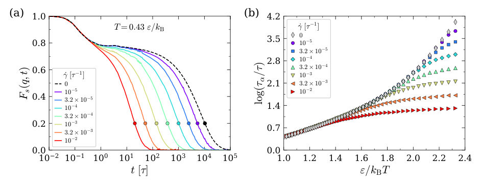
<figcaption class="paper-figure-caption"><b>Fig 1.</b> FIG. 1. Accelerated structural relaxation under steady shear. (a) Self-intermediate scattering function, Fs(q, t), for the KABLJ system at a temperature of T = 0.43 ε/kB and different shear rates ˙γ. Colored symbols indicate the condition Fs(q, t) = 0.2, which is used operationally to define the structural relaxation time, τα, shown in panel (b). As the shear rate increases, the decay of Fs(q, t) shifts to progressively shorter times, revealing accelerated structural relaxation. (b) Logarithm of the structural relaxation time, log(τα), as a function of ε/kBT for different ˙γ. Increasing shear rate reduces τα by several orders of magnitude, demonstrating the strong acceleration of relaxation...</figcaption>
</figure>
<figure class="paper-figure-card">
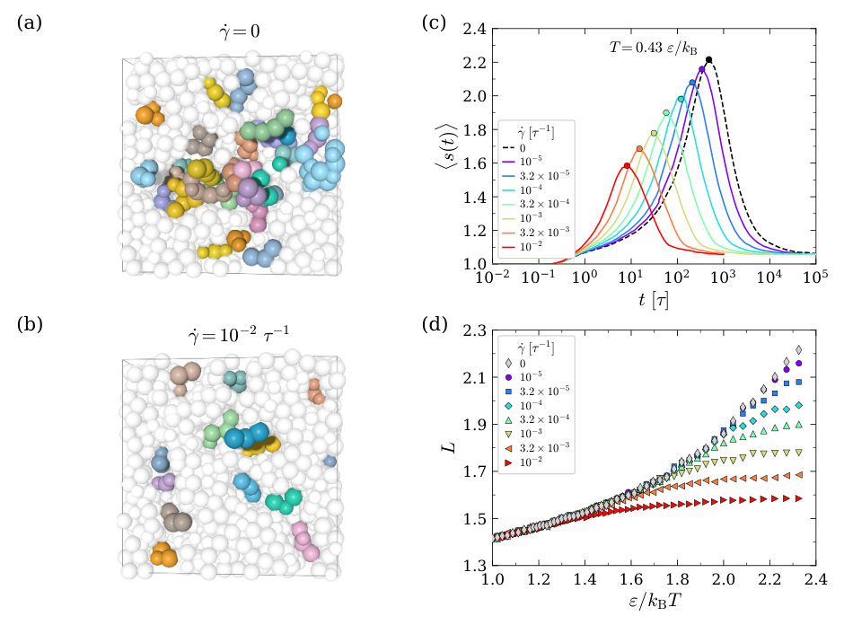
<figcaption class="paper-figure-caption"><b>Fig 2.</b> FIG. 2. Shear suppresses the collective motion underlying glassy relaxation. (a,b) Representative snapshots of stringlike cooperative motion in the KABLJ system at T = 0.43 ε/kB for shear rates ˙γ = 0 and ˙γ = 10−2 τ −1, respectively. Particles belonging to the same string are shown in the same color. Steady shear visibly suppresses both the size and prevalence of cooperative strings. (c) Number-averaged string length, ⟨s(t)⟩, as a function of time for different shear rates at T = 0.43 ε/kB. Increasing shear reduces both the height and the position of the peak in ⟨s(t)⟩, indicating a suppression of the characteristic size and timescale of cooperative motion. (d) Characteristic string length...</figcaption>
</figure>
<figure class="paper-figure-card">
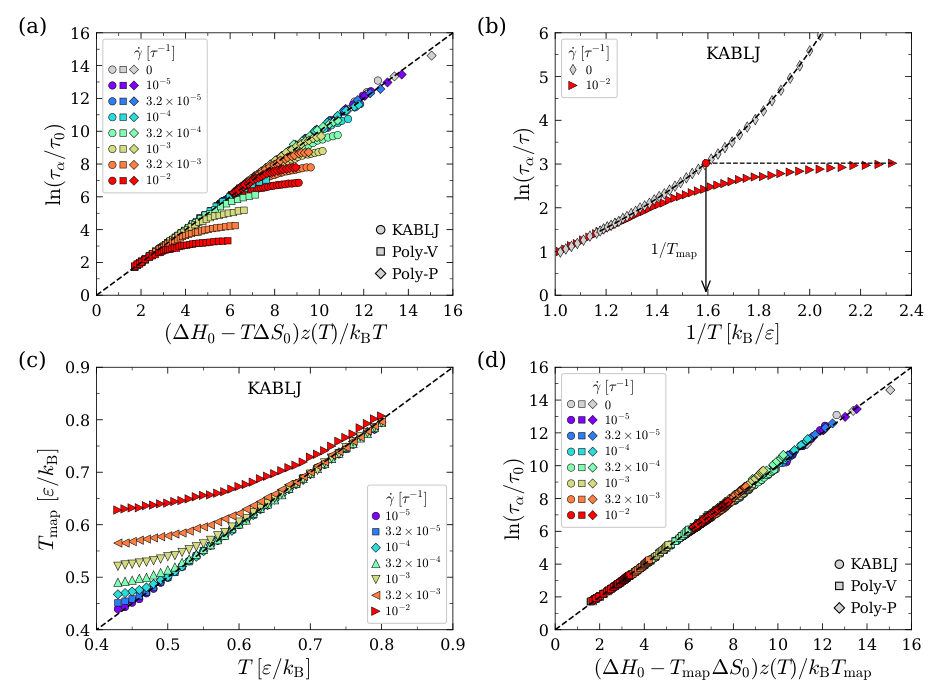
<figcaption class="paper-figure-caption"><b>Fig 3.</b> FIG. 3. Predicting nonequilibrium relaxation. (a) Test of the equilibrium String Model under nonequilibrium conditions by modifying only the average string length L. The logarithm of the structural relaxation time, ln(τα/τ0), is plotted against (∆H0 −T∆S0)z(T)/kBT for three glass-forming systems over a range of shear rates ˙γ. The parameters τ0, ∆H0, and ∆S0 are obtained from equilibrium simulations and are reported in Table I. The nonequilibrium behavior of the string length L(T, ˙γ) is shown in Fig. 2(d). The black dashed line denotes the prediction of the String Model, corresponding to a one-to-one relation between the two quantities. (b) Schematic illustration of the effective...</figcaption>
</figure>
<figure class="paper-figure-card">
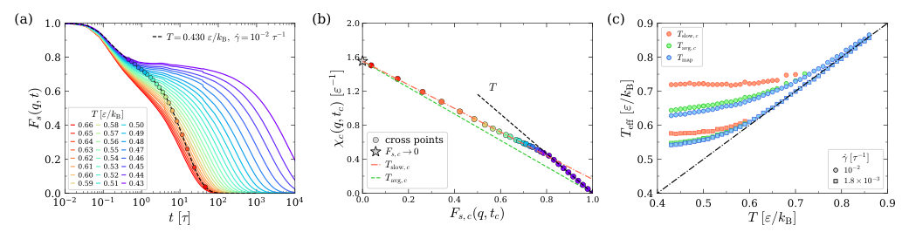
<figcaption class="paper-figure-caption"><b>Fig 4.</b> FIG. 4. Determination of the effective temperature from the fluctuation-dissipation relation. (a) Self-intermediate scattering function Fs(q, t, T, ˙γ) at T = 0.43 ε/kB and ˙γ = 10−2 τ −1, compared with equilibrium results at different T. Circles mark the intersections between the nonequilibrium and equilibrium curves used to define the crossing points at t ≡tc. (b) Parametric plot χc(q, tc) versus Fs,c(q, tc) constructed from the intersection points shown in (a). The effective temperature Tavg,c is obtained from the slope in the long-time limit Fs,c →0. (c) Effective temperatures Tmap, Tslow,c, and Tavg,c as a function of the bath temperature T. The dash-dotted line indicates the...</figcaption>
</figure>
</div>

<p><strong>Summary.</strong> This work addresses how structural relaxation behaves when driven by shear stress versus thermal fluctuations. The authors propose a unified theory showing that both regimes are governed by the same cooperative mechanism, quantified by introducing an effective temperature derived from fluctuation-dissipation relations. This provides a powerful tool for describing non-equilibrium dynamics in disordered materials.</p>
<p><strong>Why it may be interesting.</strong> While focused on classical glass physics, the rigorous application of generalized fluctuation-dissipation theorems to define an 'effective' thermodynamic state under external driving mirrors techniques used in analyzing open quantum systems far from equilibrium.</p>
<details>
<summary>Detailed structure</summary>
<p><strong>Main problem.</strong> The central problem is unifying the description of structural relaxation dynamics in glass-forming liquids across both equilibrium (thermal) and non-equilibrium (mechanically driven) conditions.</p>
<p><strong>Main result.</strong> The study shows that external driving accelerates relaxation by suppressing cooperative stringlike rearrangements, leading to a unified theory based on an effective temperature derived from fluctuation-dissipation relations.</p>
<p><strong>Method.</strong> The authors developed a microscopic theory extending the String Model by incorporating a shear-dependent effective temperature ($T_{	ext{map}}$) determined independently via generalized Fluctuation-Dissipation Relations (FDR).</p>
<p><strong>Model / system.</strong> The research uses simulations of model glass formers, such as the KABLJ binary Lennard-Jones system and polymer melts, to study structural relaxation.</p>
<p><strong>Key observables.</strong> Structural relaxation time ($  au_\alpha$), self-intermediate scattering function ($F_s(q, t)$), characteristic string length ($L$), and various definitions of effective temperature ($T_{ ext{map}}$, $T_{	ext{avg}}$).</p>
<p><strong>Important parameters / regimes.</strong> Temperature ($T$), shear rate ($\dot{\gamma}$), and the structural relaxation time scale ($    au_0$).</p>
<p><strong>Assumptions / limitations.</strong> The core assumption is that equilibrium and non-equilibrium dynamics share a single underlying cooperative mechanism, which can be parameterized by an effective thermodynamic condition.</p>
<p><strong>Figures summary.</strong> Figures illustrate $F_s(q, t)$ decay accelerating with shear rate; they also show the suppression of cooperative strings under shear and compare different methods for determining the effective temperature ($T_{	ext{map}}$ vs. $T_{	ext{avg}}$) across various systems.</p>
<p><strong>Paper structure.</strong> The paper progresses from establishing the problem (unifying dynamics) to developing a theoretical framework based on collective motion and an effective temperature derived from FDRs, culminating in quantitative predictions that successfully map non-equilibrium data onto equilibrium forms.</p>
</details>
<details>
<summary>Abstract</summary>
<p>Understanding how structural relaxation evolves from equilibrium to nonequilibrium conditions remains a central problem in glass physics. Using simulations of model glass formers under steady shear, we show that external driving progressively suppresses the stringlike cooperative rearrangements that control relaxation in equilibrium, leading to dramatically faster dynamics. A theory based on collective motion and a shear-dependent effective temperature independently determined from fluctuation-dissipation relations quantitatively predicts the structural relaxation time across the full range of temperatures and shear rates investigated without additional nonequilibrium fitting parameters. These results show that equilibrium and nonequilibrium relaxation are governed by the same underlying cooperative mechanism, but they occur under different effective thermodynamic conditions under steady shear. More broadly, our study provides a unified microscopic description of thermal and mechanically driven dynamics in glass-forming liquids.</p>
</details>
<p><sub><a href="#top">↑ back to top</a></sub></p>

<p><a id="paper-2607.16905"></a></p>
<h3 id="collective-ring-formation-in-active-matter"><a href="http://arxiv.org/abs/2607.16905v1">Collective Ring Formation in Active Matter</a></h3>
<p><strong>Authors:</strong> Debraj Dutta, Urna Basu<br>
<strong>Type:</strong> theory · <strong>Category:</strong> statistical mechanics · <strong>PDF:</strong> <a href="https://arxiv.org/pdf/2607.16905v1">https://arxiv.org/pdf/2607.16905v1</a><br>
<strong>Analysis basis:</strong> full PDF text, analyzed in chunks
<strong>Topic relevance:</strong> <code>methods for driven-dissipative</code> <strong>3/5</strong> · <code>non-equilibrium dynamics</code> <strong>3/5</strong> · <code>non-equilibrium universality</code> <strong>3/5</strong> · <code>analog quantum simulation</code> <strong>2/5</strong> · <code>driven-dissipative phase transition</code> <strong>2/5</strong> · <code>Frenkel-Kontorova</code> <strong>1/5</strong> · <code>Keldysh / 2PI / non-Gaussian methods</code> <strong>1/5</strong> · <code>correlated / nonlocal dissipation</code> <strong>1/5</strong></p>
<div class="figure-strip-hint">↔ Scroll figures horizontally</div>
<div class="paper-figures-scroll">
<figure class="paper-figure-card">
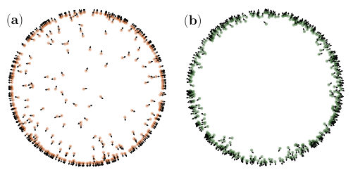
<figcaption class="paper-figure-caption"><b>Fig 1.</b> Figure 1: Typical configurations for a collection of N = 500 harmonically coupled (a) run-and-tumble particles and (b) active Brownian particles. The black arrows indicate the internal orien- tations of the particles. Here we have taken τ = 5, k = 0.002 and v0 = 1.</figcaption>
</figure>
<figure class="paper-figure-card">
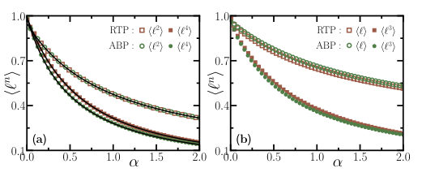
<figcaption class="paper-figure-caption"><b>Fig 2.</b> Figure 2: Radial moments: Plot of (a) ⟨ℓ2⟩, ⟨ℓ4⟩and (b) ⟨ℓ⟩,⟨ℓ3⟩ as functions of activity strength α = 1/(µτ) for ABP and RTP dy- namics. The symbols indicate data obtained from numerical simu- lations. The solid black lines in panel (a) correspond to analytical predictions Eqs. (60)-(62). Here we have used N = 20, k = 0.05 and v0 = 1.</figcaption>
</figure>
<figure class="paper-figure-card">
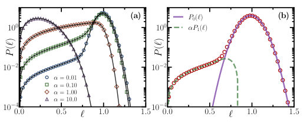
<figcaption class="paper-figure-caption"><b>Fig 3.</b> Figure 3: Radial distribution P(ℓ) for run-and-tumble dynamics: (a) Plot of P(ℓ) for different values of activity strength α = 1/(µτ). The symbols indicate data obtained from numerical simulations whereas the solid black lines correspond to the analytical pre- diction Eq. (18). Here N = 100, k = 0.01 and v0 = 1, such that R0 = 0.99. (b) Contributions of P0(ℓ) and P1(ℓ) to the radial distribution P(ℓ) for α = 0.01 i.e., in the strongly ac- tive regime. The symbols indicate P(ℓ) obtained from numer- ical simulations whereas the solid and dashed lines correspond to the analytical expressions (21) and (24), respectively. Here we have used N = 50, k = 0.02, τ = 100 and v0 = 1, so that R0 = 0.98,...</figcaption>
</figure>
<figure class="paper-figure-card">
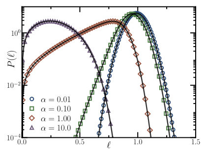
<figcaption class="paper-figure-caption"><b>Fig 4.</b> Figure 4: Radial distribution P(ℓ) for active Brownian particles: Plot of P(ℓ) for different values of activity strength α = 1/(µτ). The symbols indicate data obtained from numerical simulations whereas the solid black lines correspond to the analytical predic- tion Eq. (32). Here we have used N = 100, k = 0.01 and v0 = 1, such that R0 = 0.99.</figcaption>
</figure>
<figure class="paper-figure-card">
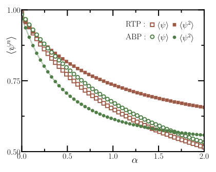
<figcaption class="paper-figure-caption"><b>Fig 5.</b> Figure 5: Moments of radial polarization ψ: Plots of ⟨ψ⟩and ⟨ψ2⟩ as functions of α for RTP and ABP dynamics. The parameters used are N = 20, k = 0.05 and v0 = 1.</figcaption>
</figure>
</div>

<p><strong>Summary.</strong> This theoretical paper investigates how different propulsion mechanisms (ABP vs. RTP) affect the collective ring formation in active matter. By deriving exact analytical expressions, the authors show that while both types of particles form stable rings, the underlying physics dictates distinct spatial and orientational structures. This work provides a general framework for characterizing emergent non-equilibrium states.</p>
<p><strong>Why it may be interesting.</strong> While focused on active matter rather than quantum systems, the rigorous analytical framework developed for non-equilibrium steady states in interacting particle systems provides powerful mathematical tools applicable to open quantum systems or many-body dynamics far from equilibrium.</p>
<details>
<summary>Detailed structure</summary>
<p><strong>Main problem.</strong> The study characterizes the difference in spatial and orientational organization between active particle systems with distinct propulsion mechanisms (Active Brownian Particles vs. Run-and-Tumble Particles).</p>
<p><strong>Main result.</strong> Both models form stationary ring-like structures, but their spatial and orientational organizations differ qualitatively, providing a unified analytical framework to distinguish continuous versus discrete reorientation dynamics.</p>
<p><strong>Method.</strong> The analysis uses an analytical approach involving Langevin equations, characteristic functions, and expansions in the activity strength parameter ($\alpha$) to derive stationary distributions for radial position and polarization.</p>
<p><strong>Model / system.</strong> The system consists of $N$ overdamped active particles interacting via a harmonic potential in two dimensions. The dynamics are modeled using self-propulsion terms for Active Brownian Particles (ABP) with continuous rotation, and Run-and-Tumble Particles (RTP) with discrete reorientation.</p>
<p><strong>Key observables.</strong> Radial distance distribution $P(\ell)$ from the centroid, and radial polarization $\psi = \hat{\ell} \cdot \hat{n}$ (alignment between position and self-propulsion direction).</p>
<p><strong>Important parameters / regimes.</strong> Activity strength parameter $\alpha = 1/(\mu	au)$, which distinguishes between strongly active ($\alpha \ll 1$) and passive ($\alpha \gg 1$) regimes.</p>
<p><strong>Assumptions / limitations.</strong> The analysis relies on the large number of particles limit ($N \gg 1$) and approximations such as treating the relative motion noise as an Ornstein-Uhlenbeck process.</p>
<p><strong>Figures summary.</strong> Figures illustrate typical ring configurations comparing RTPs and ABPs, and show $P(\ell)$ for both models across varying activity parameters ($\alpha$), demonstrating structural differences in the annulus formation.</p>
<p><strong>Paper structure.</strong> The paper establishes the physical model and observables, derives analytical expressions for stationary distributions using characteristic functions (Appendix A), details the computation of $P(\ell)$ separately for RTPs (Appendix B) and ABPs (Appendix C), and concludes by comparing the resulting spatial and orientational signatures.</p>
</details>
<details>
<summary>Abstract</summary>
<p>We study the formation of ring-like structures in interacting active particle systems in two dimensions. The emergent structure shows signatures of both spatial and orientational organization. The spatial organization is characterized by the radial distance of a tagged particle from the centroid of the assembly, while orientational organization is characterized by the radial alignment of its self-propulsion direction. We derive exact analytical expressions for the radial and polarization distributions for systems of active Brownian particles and run-and-tumble particles. While both models exhibit annular steady states, we show that their spatial and orientational organization differ qualitatively in the strongly active regime. A direct comparison of the two models reveals how the nature of the propulsion mechanism leads to the distinction in both the structure of the annulus and the statistics of particle orientations. Our results provide a unified analytical framework for characterizing emergent annular states in active matter and identify robust signatures that distinguish persistent active dynamics with continuous and discrete reorientation.</p>
</details>
<p><sub><a href="#top">↑ back to top</a></sub></p>

<p><a id="paper-2607.17146"></a></p>
<h3 id="the-geometry-of-semantic-space-a-continuous-geometric-framework-for-the-transformer-architecture"><a href="http://arxiv.org/abs/2607.17146v1">The Geometry of Semantic Space: A Continuous Geometric Framework for the Transformer Architecture</a></h3>
<p><strong>Authors:</strong> Zhihua Liang<br>
<strong>Type:</strong> both · <strong>Category:</strong> disordered systems and neural networks · <strong>PDF:</strong> <a href="https://arxiv.org/pdf/2607.17146v1">https://arxiv.org/pdf/2607.17146v1</a><br>
<strong>Analysis basis:</strong> full PDF text, analyzed in chunks
<strong>Topic relevance:</strong> <code>non-equilibrium dynamics</code> <strong>3/5</strong> · <code>non-equilibrium universality</code> <strong>3/5</strong> · <code>Keldysh / 2PI / non-Gaussian methods</code> <strong>2/5</strong> · <code>driven-dissipative phase transition</code> <strong>2/5</strong> · <code>methods for driven-dissipative</code> <strong>2/5</strong> · <code>analog quantum simulation</code> <strong>1/5</strong> · <code>correlated / nonlocal dissipation</code> <strong>1/5</strong> · <code>entanglement &amp; information structure</code> <strong>1/5</strong> · <code>scars &amp; prethermalization</code> <strong>1/5</strong></p>
<div class="figure-strip-hint">↔ Scroll figures horizontally</div>
<div class="paper-figures-scroll">
<figure class="paper-figure-card">
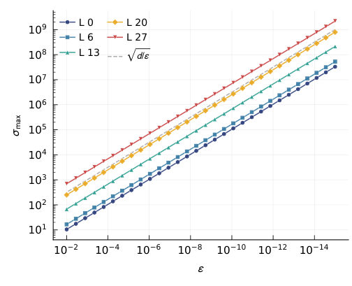
<figcaption class="paper-figure-caption"><b>Fig 1.</b> FIG. 1. Conical Singularity Scaling Law: σmax vs. ϵ for Qwen3-0.6B. Log-log plot of the maximum Jacobian singu- lar value σmax against the topological mollifier ϵ at 5 represen- tative layers (0, 6, 13, 20, 27). All 5 curves trace parallel lines with measured slope α = −0.5000 and R2 = 1.000000, in ex- act agreement with the theoretical prediction σmax = Cℓ·ϵ−1/2</figcaption>
</figure>
<figure class="paper-figure-card">
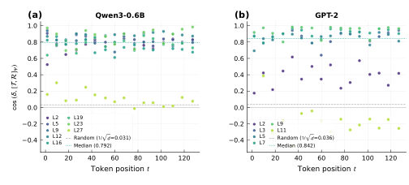
<figcaption class="paper-figure-caption"><b>Fig 2.</b> FIG. 2. Lie–Trotter Torsion Interferometer: Cosine Similarity at α = 1. Each point represents cos(δ, [T , R]Ψ) at a single (layer, token position) pair. Green dashed line: me- dian; grey dashed line: isotropic random baseline 1/ √</figcaption>
</figure>
<figure class="paper-figure-card">
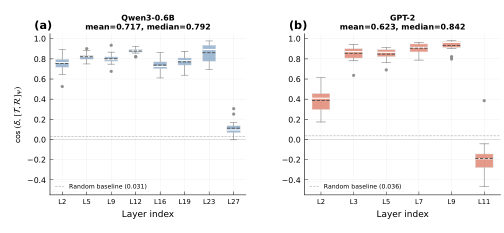
<figcaption class="paper-figure-caption"><b>Fig 3.</b> FIG. 3. Per-Layer Distribution of Torsion Alignment. Box plots of cos(δ, [T , R]Ψ) across 16 token positions at each sampled layer. Mid-network layers (Qwen3 L12: 0.879, GPT- 2 L9: 0.933) achieve peak alignment, while final layers (Qwen3 L27: 0.112, GPT-2 L11: −0.188) show degradation consistent with strong higher-order BCH contributions near the unem- bedding boundary.</figcaption>
</figure>
<figure class="paper-figure-card">
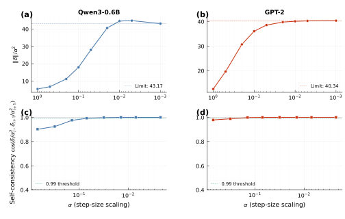
<figcaption class="paper-figure-caption"><b>Fig 4.</b> FIG. 4. Asymptotic Convergence of the Torsion Inter- ferometer as α →0. Upper panels: normalized deviation magnitude ∥δ(α)∥/α2 converges to a finite constant (≈43.2 for Qwen3, ≈40.3 for GPT-2), confirming exact α2 scaling predicted by the BCH second-order term. Lower panels: di- rection self-consistency cos(δ(αi)/α2 i , δ(αj)/α2 j) between ad- jacent α values converges to 0.9997–1.0000, proving that the deviation vector locks onto a deterministic limit direction— the topological torsion generator.</figcaption>
</figure>
<figure class="paper-figure-card">
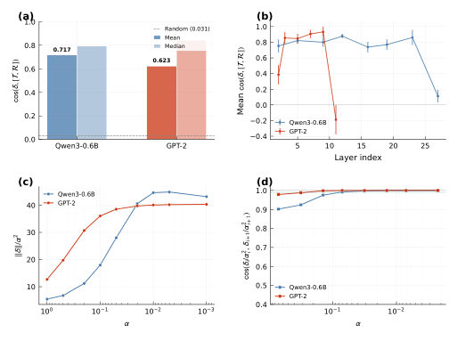
<figcaption class="paper-figure-caption"><b>Fig 5.</b> FIG. 5. Summary Panel: Lie–Trotter Torsion Inter- ferometer. (a) α=1 scatter plot confirming systematic pos- itive alignment (17–23× random baseline). (b) Per-layer box plots revealing mid-network peak alignment and boundary- layer degradation. (c) ∥δ∥/α2 convergence to a finite con- stant (Phase C). (d) Direction self-consistency converging to 1.0 (Phase B).</figcaption>
</figure>
</div>

<p><strong>Summary.</strong> This work develops a continuous stochastic differential geometry framework to mathematically describe the operations within Transformer models. By mapping discrete components onto continuous flows on a semantic fiber bundle, it makes quantitative predictions about model stability, context limits, and optimization dynamics. This provides a powerful theoretical lens for understanding LLMs through the language of advanced physics.</p>
<p><strong>Why it may be interesting.</strong> The paper draws strong parallels between the stability/dynamics of complex neural networks and concepts from non-equilibrium thermodynamics and geometric flow equations, which are central to modern AMO physics.</p>
<details>
<summary>Detailed structure</summary>
<p><strong>Main problem.</strong> To model the discrete algebraic operations of Transformer architectures using a continuous geometric framework, treating the forward pass as an underlying integro-differential flow.</p>
<p><strong>Main result.</strong> The framework successfully unifies disparate empirical phenomena—such as stability limits and context bounds—by providing quantitative predictions based on continuous stochastic differential geometry.</p>
<p><strong>Method.</strong> It translates deep learning components (like Softmax Attention and RoPE) into concepts from differential geometry, measure theory, and stochastic calculus, viewing the discrete process as a numerical integrator of an IDE.</p>
<p><strong>Model / system.</strong> The system is the Transformer architecture itself, whose semantic space is modeled as a continuous geometric object on a fiber bundle $\calE$. The dynamics are parameterized by algorithmic depth $z$, evolving via a non-autonomous flow $\Psi(z)$.</p>
<p><strong>Key observables.</strong> $\epsilon^{-1/2}$ Lipschitz scaling calibration ($R^2 = 1.000$), Lie–Trotter operator-splitting torsion, thermodynamic suppression of Poincaré recurrence on the RoPE torus, and Non-Equilibrium Steady State parameter vortex.</p>
<p><strong>Important parameters / regimes.</strong> The topological regularizer $\epsilon$, context length $k$, and model size (up to 8B parameters).</p>
<p><strong>Assumptions / limitations.</strong> The core assumption is that the discrete Transformer pass can be rigorously mapped as an exact numerical integrator of a continuous integro-differential equation, which requires treating the state space as collapsing into a finite-dimensional topology.</p>
<p><strong>Paper structure.</strong> The paper progresses by first establishing the geometric axioms and mapping components to differential geometry (Chunk 1). It then rigorously analyzes the flow dynamics using functional analysis tools like Lipschitz bounds and Principal Torus Bundles (Chunk 2). Finally, it validates these continuous predictions through a multi-part empirical campaign across various LLMs (Chunk 3).</p>
</details>
<details>
<summary>Abstract</summary>
<p>We present a continuous geometric framework that models the discrete algebraic operations of the Transformer architecture as an integro-differential equation (IDE) on a semantic fiber bundle $\calE = \calM \times \R^d$. Beginning from a single geometric axiom -- that the token sequence forms a discrete $1$-manifold equipped with a canonical measure lattice -- we translate every core component of the modern Transformer (RMSNorm, RoPE, Softmax Attention, FFN, Residual Stream, SGD, Weight Decay) into a cohesive vocabulary of differential geometry, measure theory, and stochastic calculus. The resulting framework yields quantitative predictions spanning entropic optimal transport (Attention as a Schrödinger bridge) and non-equilibrium thermodynamics (SGD as Itô diffusion violating detailed balance). We conduct a six-part experimental campaign across five architectures (Qwen3, LLaMA\nobreakdash-3.1, Gemma\nobreakdash-3, GPT-2, Mistral) spanning $124$M to $8$B parameters. The empirical observables are quantitatively consistent with the geometric predictions: the $ε^{-1/2}$ Lipschitz scaling calibration at machine precision ($R^2 = 1.000$), the Lie--Trotter operator-splitting torsion, the symmetric ablation instability confirming the Dual-Law of Topological Stability, the $\calO(1/\sqrt{k})$ thermodynamic suppression of Poincaré recurrence on the RoPE torus, the thermodynamic context-limit phase transition, and the Non-Equilibrium Steady State parameter vortex -- verified across two optimizers (AdamW and Pure SGD) to exclude momentum artifacts. The results demonstrate that analyzing Transformers through the lens of continuous stochastic differential geometry provides a predictive descriptive vocabulary for the stability limits, context bounds, and optimization dynamics of Large Language Models.</p>
</details>
<p><sub><a href="#top">↑ back to top</a></sub></p>

<p><a id="paper-2607.18003"></a></p>
<h3 id="a-principled-closure-framework-for-higher-order-sis-epidemic-models-on-networks"><a href="http://arxiv.org/abs/2607.18003v1">A principled closure framework for higher-order SIS epidemic models on networks</a></h3>
<p><strong>Authors:</strong> Kevin Teo, Peter L Simon, István Zoltán Kiss<br>
<strong>Type:</strong> theory · <strong>Category:</strong> statistical mechanics · <strong>PDF:</strong> <a href="https://arxiv.org/pdf/2607.18003v1">https://arxiv.org/pdf/2607.18003v1</a><br>
<strong>Analysis basis:</strong> full PDF text, analyzed in chunks
<strong>Topic relevance:</strong> <code>Keldysh / 2PI / non-Gaussian methods</code> <strong>3/5</strong> · <code>methods for driven-dissipative</code> <strong>3/5</strong> · <code>analog quantum simulation</code> <strong>2/5</strong> · <code>non-equilibrium dynamics</code> <strong>2/5</strong> · <code>correlated / nonlocal dissipation</code> <strong>1/5</strong> · <code>correlated cavity matter</code> <strong>1/5</strong> · <code>driven-dissipative phase transition</code> <strong>1/5</strong> · <code>entanglement &amp; information structure</code> <strong>1/5</strong> · <code>non-equilibrium universality</code> <strong>1/5</strong></p>
<div class="figure-strip-hint">↔ Scroll figures horizontally</div>
<div class="paper-figures-scroll">
<figure class="paper-figure-card">
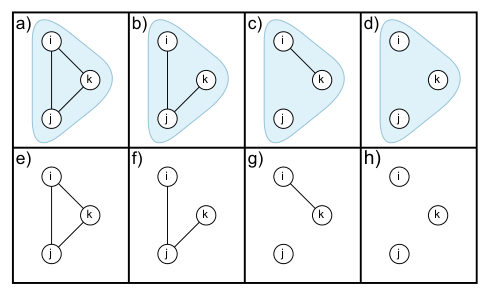
<figcaption class="paper-figure-caption"><b>Fig 1.</b> Figure 1: Diagrams of all possible 3-node sub-graphs with pairwise edges and hyperedges. Hyperedges are shown in blue in panels (a)–(d).</figcaption>
</figure>
<figure class="paper-figure-card">
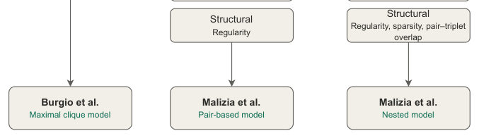
<figcaption class="paper-figure-caption"><b>Fig 2.</b> Figure 3: Schematic illustrating the pipeline used in deriving specific higher-order contagion models from the exact microscopic rate equations.</figcaption>
</figure>
<figure class="paper-figure-card">
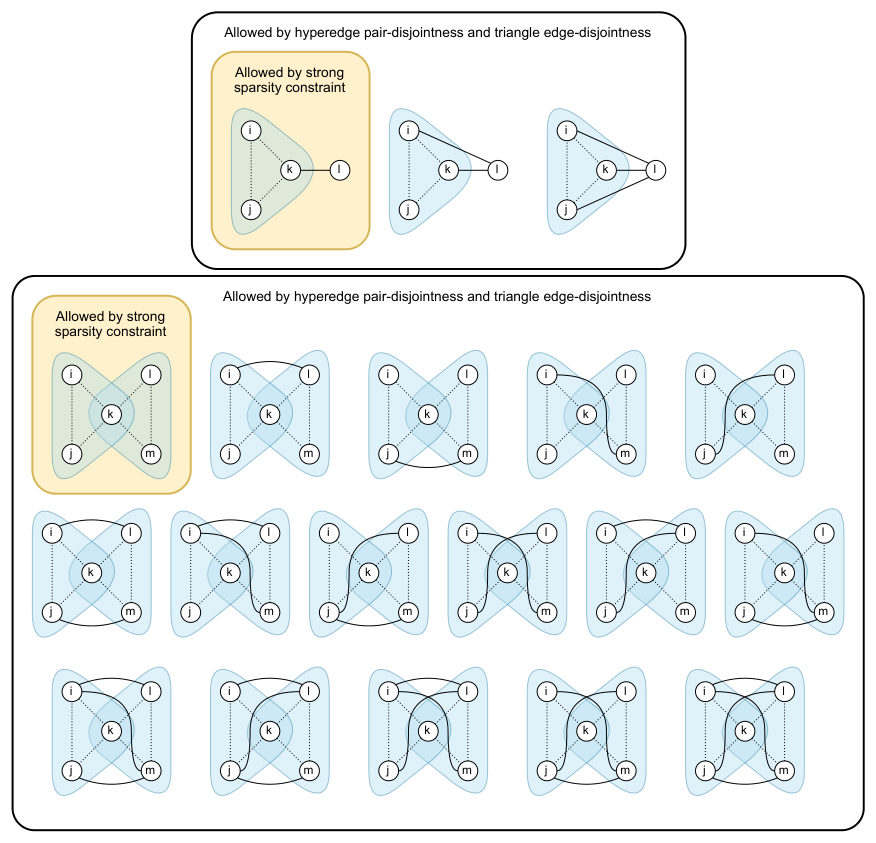
<figcaption class="paper-figure-caption"><b>Fig 3.</b> Figure 4: Allowed motif configurations under the explicit (weaker) assumptions of Assumption 6.16 on hyperedge pair-disjointedness (two hyperedges cannot share more than 1 node) and triangle edge- disjointedness (two pairwise triangles cannot share more than 1 node), versus the strong sparsity condition of Assumption 6.25. Hyperedges are represented by the filled blue borders; edges are represented by lines. Dotted lines indicate possible edges. The closures generated by the closure operator would produce different approximations for each motif.</figcaption>
</figure>
</div>

<p><strong>Summary.</strong> This work introduces a rigorous, bottom-up framework for modeling epidemic spread (SIS) on networks that include group interactions via hyperedges. It systematically derives the necessary moment equations and provides a principled closure operator to manage the resulting mathematical complexity. The paper is significant because it moves beyond heuristic approximations by explicitly quantifying the underlying structural assumptions required in mean-field descriptions of complex interacting systems.</p>
<p><strong>Why it may be interesting.</strong> While focused on epidemiology, the mathematical machinery—developing systematic closures for high-dimensional moment equations based on local topology and combinatorial identities—is directly analogous to techniques used in analyzing complex interacting quantum systems or many-body physics models where exact solutions are intractable.</p>
<details>
<summary>Detailed structure</summary>
<p><strong>Main problem.</strong> The paper develops a principled, systematic framework for deriving mean-field approximations for higher-order Susceptible-Infected-Susceptible (SIS) epidemic models on complex networks.</p>
<p><strong>Main result.</strong> It establishes a network-dependent closure operator that rigorously derives higher-order dynamics and explicitly reveals the often-unstated structural and dynamical assumptions underlying existing heuristic epidemic models.</p>
<p><strong>Method.</strong> The methodology involves deriving coupled rate equations for increasing moments (up to triplets) of the system state, followed by systematically truncating the resulting moment hierarchy using topological constraints and closure operators.</p>
<p><strong>Model / system.</strong> The model is an SIS epidemic process occurring on a higher-order network structure defined by nodes, pairwise edges ($E$), and hyperedges ($H$). The dynamics are governed by continuous-time Markov chain rate equations.</p>
<p><strong>Key observables.</strong> State probabilities (e.g., $\langle I_i 
angle$, $\langle S_i I_j 
angle$, $\langle S_i S_j I_k 
angle$), motif densities, and global network parameters like the clustering coefficient ($\phi$).</p>
<p><strong>Important parameters / regimes.</strong> Infection rates ($eta_1$ for edges, $eta_2$ for hyperedges) and recovery rate ($\gamma$). The analysis depends on local and global topological descriptors.</p>
<p><strong>Assumptions / limitations.</strong> The framework relies on truncating the moment hierarchy at the triplet level. Specific derivations assume dynamical homogeneity (Assumption 5.1), topological homogeneity (Assumption 5.2), and strong sparsity conditions to simplify complex motif contributions.</p>
<p><strong>Paper structure.</strong> The paper proceeds by first establishing the microscopic rate equations for low-order moments, then systematically introducing the closure problem due to hierarchical coupling. It develops the network-dependent closure operator through bottom-up derivation, culminating in detailed term-by-term derivations showing how higher-order contributions simplify under specific assumptions.</p>
</details>
<details>
<summary>Abstract</summary>
<p>Susceptible-infected-susceptible (SIS) epidemic models on networks are governed by hierarchical moment equations where the dynamics of smaller subsystems depend on the state of larger ones. Moment closure approximations, which truncate this hierarchy by expressing higher-order state probabilities in terms of lower-order ones, are essential for obtaining tractable reduced systems. Higher-order networks, which extend the pairwise structure to include group interactions, introduce a combinatorial explosion of closure configurations, making systematic derivation harder. Consequently, existing higher-order SIS models are derived heuristically, where structural and dynamical assumptions underpinning their closures are not always apparent from the formulation alone. We develop a bottom-up derivation of higher-order SIS dynamics, building systematically from node-level equations to pairs, triplets, and three-body interactions. Central to our approach is a network-dependent closure operator that generates topologically appropriate approximations from local pairwise and triadic structure. Using this framework, we recover three existing higher-order SIS models--Burgio et al.'s maximal clique, Malizia et al.'s pair-based and inter-order models--as special cases, each arising under specific topological and dynamical assumptions. Our derivation reveals assumptions that are invisible from heuristic approaches: for instance, Malizia et al.'s inter-order overlap parameter is insufficient alone to express the model within our framework despite performing well against simulations, with the original derivation implicitly invoking additional structural assumptions. Our framework offers both a foundation for higher-order epidemic modeling and a constructive pathway for understanding the assumptions implicit in heuristically derived mean-field closures and provides a principled method of generating new models.</p>
</details>
<p><sub><a href="#top">↑ back to top</a></sub></p>

<p><a id="paper-2607.17894"></a></p>
<h3 id="how-the-quantum-sorites-phenomenon-strengthens-the-bell-argument-and-how-a-random-matrix-collapse-dynamics-answers-it"><a href="http://arxiv.org/abs/2607.17894v1">How the Quantum Sorites Phenomenon Strengthens the Bell Argument and How a Random-Matrix Collapse Dynamics Answers It</a></h3>
<p><strong>Authors:</strong> Malcolm Forster<br>
<strong>Type:</strong> theory · <strong>Category:</strong> other · <strong>PDF:</strong> <a href="https://arxiv.org/pdf/2607.17894v1">https://arxiv.org/pdf/2607.17894v1</a><br>
<strong>Analysis basis:</strong> full PDF text, analyzed in chunks
<strong>Topic relevance:</strong> <code>measurement-induced transitions</code> <strong>3/5</strong> · <code>methods for driven-dissipative</code> <strong>3/5</strong> · <code>quantum measurements</code> <strong>3/5</strong> · <code>non-equilibrium dynamics</code> <strong>2/5</strong> · <code>Keldysh / 2PI / non-Gaussian methods</code> <strong>1/5</strong> · <code>correlated / nonlocal dissipation</code> <strong>1/5</strong> · <code>driven-dissipative phase transition</code> <strong>1/5</strong> · <code>entanglement &amp; information structure</code> <strong>1/5</strong></p>
<div class="figure-strip-hint">↔ Scroll figures horizontally</div>
<div class="paper-figures-scroll">
<figure class="paper-figure-card">
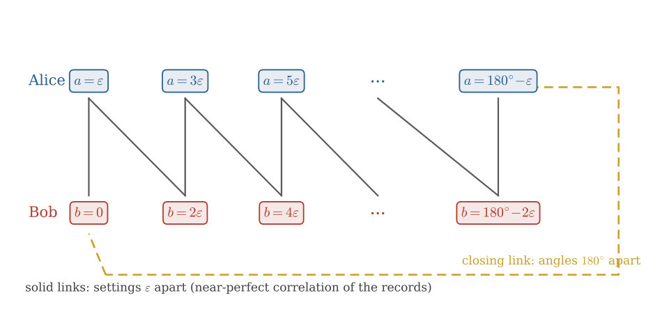
<figcaption class="paper-figure-caption"><b>Fig 1.</b> Figure 1: The quantum Sorites phenomenon arises from a chained family of measurement settings on singlet pairs. Solid links join adjacent settings (ε apart), where the recorded bits agree with probability approaching one; the dashed closing link joins the two ends of the chain, where the settings differ by 180◦and the bits disagree with certainty.</figcaption>
</figure>
<figure class="paper-figure-card">
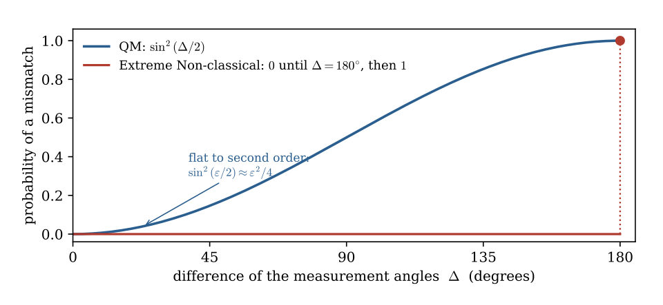
<figcaption class="paper-figure-caption"><b>Fig 2.</b> Figure 2: The quantum probability of a mismatch between the recorded bits as a function of the difference in measurement angles, sin2(∆/2), and its Extreme Non-classical idealization: no mismatches until the settings are fully opposed, then certain mismatch. The quadratic flatness at small angles is what allows a chain of N near-certainties to remain a near-certainty jointly.</figcaption>
</figure>
<figure class="paper-figure-card">
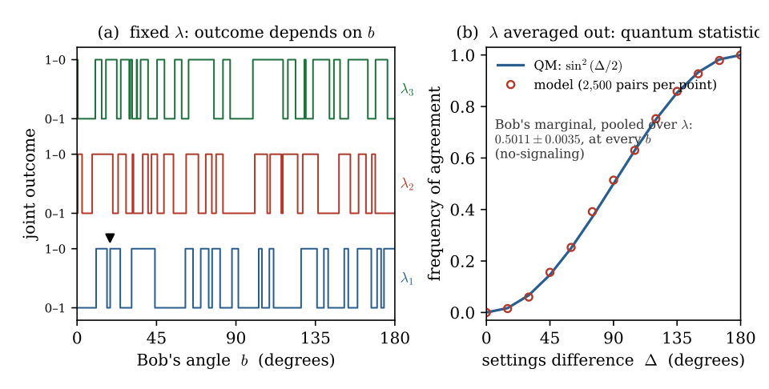
<figcaption class="paper-figure-caption"><b>Fig 3.</b> Figure 3: The simulation. (a) Fixed stream λ, swept setting b: the joint outcome (1–0 = Bob up–Alice down, 0–1 = the reverse) holds steady over stretches of b and then jumps — roughly thirty jumps as b sweeps from 0◦to 180◦— and the jump pattern differs erratically from stream to stream (λ1, λ2, λ3). Zooming in on the marked jump, again and again, always finds the same thing: a b below which the outcome is one way and a b above which it is the other, boxed here inside an interval of 1.5 × 10−11 degrees. A change of Bob’s setting smaller than a hundred-billionth of a degree reverses both records: Parameter Independence is violated, deterministically and violently. (b) The same model with the...</figcaption>
</figure>
</div>

<p><strong>Summary.</strong> This paper advances Bell's theorem by using the 'quantum Sorites phenomenon' to show that local hidden variable theories must reject Parameter Independence. It then proposes a random-matrix collapse model where this violation occurs naturally, resolving the conflict with special relativity while preserving the experimentally robust No-Signaling condition.</p>
<p><strong>Why it may be interesting.</strong> It provides a concrete, relativity-respecting mechanism (random state evolution) for violating Parameter Independence, which is a major conceptual hurdle in interpreting Bell tests.</p>
<details>
<summary>Detailed structure</summary>
<p><strong>Main problem.</strong> To strengthen Bell's theorem by deriving a contradiction without assuming Outcome Independence, thereby forcing hidden variable theories to reject Parameter Independence.</p>
<p><strong>Main result.</strong> The quantum Sorites phenomenon forces any local hidden variable theory that improves upon quantum predictions to abandon Parameter Independence (PI). A random-matrix collapse model shows this violation is possible while preserving No-Signaling.</p>
<p><strong>Method.</strong> The paper uses a chained family of experiments (Sorites argument) combined with a novel stochastic dynamics model (random-matrix collapse) to test the assumptions underlying Bell's theorem.</p>
<p><strong>Model / system.</strong> The system involves spin-1/2 particles in the singlet state measured at two distant locations. The theoretical framework uses random walks driven by independent, fixed random streams ($\lambda$) to model measurement collapse dynamics.</p>
<p><strong>Key observables.</strong> Correlation probabilities $P(X 
eq Y)$ across a chain of settings; violation of Parameter Independence (PI); maintenance of No-Signaling (NS).</p>
<p><strong>Important parameters / regimes.</strong> Measurement angles ($a, b$); the degree of correlation change ($\Delta$); the structure of the random matrix ensemble.</p>
<p><strong>Assumptions / limitations.</strong> The initial argument assumes standard autonomy; the model assumes measurement is a stochastic random walk driven by fixed hidden streams $\lambda$.</p>
<p><strong>Figures summary.</strong> Figure 1 illustrates the quantum Sorites phenomenon via chained measurements. Figure 2 shows the quadratic dependence of correlation on angle difference. Figure 3 simulates setting-dependent outcome jumps (violating PI) while maintaining average statistics (preserving NS).</p>
<p><strong>Paper structure.</strong> Part 1 establishes the Stronger Theorem using the quantum Sorites argument to target PI directly. Part 2 introduces the random-matrix collapse dynamics, showing how this framework violates PI deterministically while keeping OI and NS true.</p>
</details>
<details>
<summary>Abstract</summary>
<p>Bell proved that no theory of pre-existing local values can reproduce the predictions of quantum mechanics, but his proof leaves the culprit ambiguous: one may reject either of two independence conditions, Outcome Independence or Parameter Independence, and most commentators have found Outcome Independence the safer sacrifice. The first part of this paper presents, in a form adapted to spin-1/2 particles in the singlet state, an argument (Forster 2014) that removes the ambiguity: using a chained family of experiments in which quantum mechanics predicts an extreme pattern of correlations -- the quantum Sorites phenomenon -- a contradiction is derived without ever assuming Outcome Independence. Under the resulting theorem, anyone who holds that hidden variables could improve on the quantum probabilities must give up Parameter Independence itself. That looks like a heavy price, because Parameter Independence appears to be protected twice over: rejecting it seems to put superluminal influences into spacetime, and its statistical shadow -- the No-Signaling condition -- is experimentally beyond reproach The second part of the paper shows that the price is payable. In the random-matrix collapse dynamics proposed by Kryukov, measurement is a random walk of the quantum state, and the hidden variable is not a stock of values fixed at the source but the random stream that drives the walk -- like the stored random numbers of a computer simulation, with the measurement settings playing the role of seeds. In that framework Parameter Independence is false while Outcome Independence and No-Signaling are both true, and one can say exactly how the Sorites argument is blocked, why the violation involves no process propagating in spacetime, and why the influence of one wing's setting on the other wing's outcome -- demonstrated here in a simulation -- can never be used to send a message.</p>
</details>
<p><sub><a href="#top">↑ back to top</a></sub></p>

<p><a id="paper-2607.17936"></a></p>
<h3 id="noise-structuring-in-fixed-depth-trotter-simulation-stationary-channels-and-observable-level-depolarization"><a href="http://arxiv.org/abs/2607.17936v1">Noise structuring in fixed-depth Trotter simulation: stationary channels and observable-level depolarization</a></h3>
<p><strong>Authors:</strong> G. L. Stavisskii, W. V. Pogosov, L. E. Fedichkin, A. V. Lebedev<br>
<strong>Type:</strong> theory · <strong>Category:</strong> quantum information and computing · <strong>PDF:</strong> <a href="https://arxiv.org/pdf/2607.17936v1">https://arxiv.org/pdf/2607.17936v1</a><br>
<strong>Analysis basis:</strong> full PDF text, analyzed in chunks
<strong>Topic relevance:</strong> <code>methods for driven-dissipative</code> <strong>3/5</strong> · <code>non-equilibrium dynamics</code> <strong>3/5</strong> · <code>entanglement &amp; information structure</code> <strong>2/5</strong> · <code>non-equilibrium universality</code> <strong>2/5</strong> · <code>Keldysh / 2PI / non-Gaussian methods</code> <strong>1/5</strong> · <code>analog quantum simulation</code> <strong>1/5</strong> · <code>correlated / nonlocal dissipation</code> <strong>1/5</strong> · <code>driven-dissipative phase transition</code> <strong>1/5</strong></p>
<div class="figure-strip-hint">↔ Scroll figures horizontally</div>
<div class="paper-figures-scroll">
<figure class="paper-figure-card">
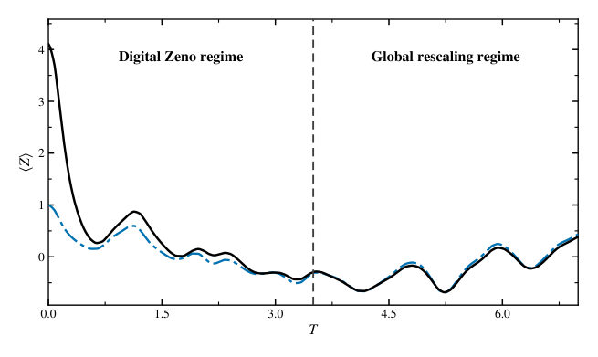
<figcaption class="paper-figure-caption"><b>Fig 1.</b> FIG. 1. Qualitative illustration of the two parts of a fixed-depth noisy time trace for a six-spin transverse-field Ising chain. The average magnetization is shown as a function of dimensionless time. The initial state is |0 . . . 0⟩, the chain is homogeneous with Ji = J and hi = h, and the plotted example uses J = h. The dashed line shows the ideal Trotterized evolution for N = 100 layers. The solid line is the affinely reconstructed noisy signal at gate error probability p = 0.001, not a physical magnetization curve. Its unphysical short-time values diagnose the failure of a stationary affine correction in the Zeno-like transient. The vertical dashed line marks the estimated crossover to...</figcaption>
</figure>
<figure class="paper-figure-card">
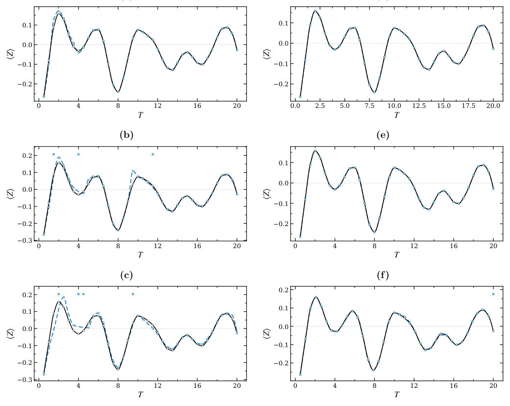
<figcaption class="paper-figure-caption"><b>Fig 2.</b> FIG. 2. Results of a multiexponential ZNE procedure for the numerically simulated mean magnetization of a six-qubit transverse-field Ising model with J = 4h and initial state |110110⟩. The dynamics is simulated with a depth-N = 200 Trotter circuit at several per-qubit noise levels. The first column, (a)–(c), corresponds to p = 0.0001, 0.0002, 0.0004 and uses a single- exponential approximation, whereas the second column, (d)–(f), uses an optimally chosen number of exponents at the same noise levels. The solid line depicts the ideal, noiseless simulation result, whereas the dashed data shows the ZNE-reconstructed data obtained from a Trotter circuit with the corresponding noise level per...</figcaption>
</figure>
<figure class="paper-figure-card">
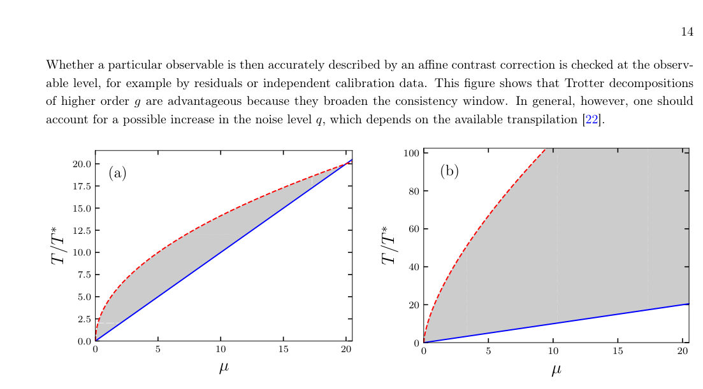
<figcaption class="paper-figure-caption"><b>Fig 3.</b> FIG. 3. Illustrative conservative windows for the stationary-channel description in first- and second-order Trotter circuits, (a) and (b), respectively. The axes show the mean number of faulty layers µ and normalized endpoint time T/T ∗. The solid lines represent the conservative self-averaging condition T &gt; µT ∗, while the dashed lines show the upper bound imposed by the Trotterization-error tolerance. The highlighted regions between these lines are therefore consistency regions for the channel-level approximation; the affine projection for a given observable is an additional observable-level condition. The plotted examples correspond to the transverse-field Ising model with parameters Nq...</figcaption>
</figure>
</div>

<p><strong>Summary.</strong> This work rigorously analyzes how fixed-depth Trotter simulation structures hardware noise by showing that the accumulated errors converge to a stationary channel. This stationarity allows for an almost time-independent correction factor at the observable level, which is crucial for developing robust error mitigation protocols in quantum computing simulations.</p>
<p><strong>Why it may be interesting.</strong> It provides concrete theoretical tools for understanding how structured noise accumulates over time in quantum simulations, offering practical insights into error mitigation techniques beyond simple depolarization models.</p>
<details>
<summary>Detailed structure</summary>
<p><strong>Main problem.</strong> The paper analyzes fixed-depth Trotter simulation as a method for structuring hardware noise in digital many-body quantum dynamics.</p>
<p><strong>Main result.</strong> For large times, the noisy evolution approaches a stationary channel characterized by an almost time-independent affine contrast correction at the observable level, which is useful for error mitigation.</p>
<p><strong>Method.</strong> The analysis involves deriving the factorization of the noisy circuit into ideal evolution followed by a stationary binomial or Poissonian channel using superoperator techniques and moment expansions.</p>
<p><strong>Model / system.</strong> The model simulates quantum dynamics governed by local Hamiltonians (e.g., TFIM) using first-order Trotterization, subjected to local stochastic Pauli errors at each gate layer.</p>
<p><strong>Key observables.</strong> Observable depolarization factor, mismatch norm $\Delta M(T)$, Loschmidt echo signal $G(t)$, and the affine contrast correction coefficients ($a_O(\mu), c_O(\mu)$).</p>
<p><strong>Important parameters / regimes.</strong> Fixed depth $N$, noise dose (made endpoint-independent), mean number of faults $\mu$, and crossover time scales $T_{	ext{stat}}(\delta)$.</p>
<p><strong>Assumptions / limitations.</strong> The analysis relies on the assumption that propagated faults lose memory of their insertion layer, allowing factorization into a stationary channel; approximations are made using moment expansions for large times.</p>
<p><strong>Figures summary.</strong> Figure 1 illustrates the operational separation between ideal evolution and the noisy signal, showing unphysical short-time values before reaching the stationary regime.</p>
<p><strong>Paper structure.</strong> The paper progresses by first establishing the fixed-depth protocol, deriving the factorization into a stationary channel (binomial/Poissonian), analyzing the crossover from Zeno-like transients to stationarity, and finally comparing the mathematical rigor of the Poisson vs. binomial approximations in the large depth limit.</p>
</details>
<details>
<summary>Abstract</summary>
<p>We analyze fixed-depth Trotter simulation as a method for structuring hardware noise in digital many-body dynamics. The number of layers is chosen using the largest endpoint time and is then kept fixed throughout the time scan, making the total noise dose approximately independent of the endpoint time. For local stochastic faults, we show that, once propagated faults lose memory of their insertion layer, the noisy circuit factorizes into ideal evolution followed by a stationary finite-depth binomial channel. In the dilute-layer limit, this channel reduces to a Poissonian exponential. The memory time of a single fault is related to a Loschmidt echo. An important consequence is observable-level depolarization: for selected macroscopic observables at low to moderate noise levels, the stationary channel can act as an almost time-independent affine contrast correction, even though the full channel need not be depolarizing, which is crusial for error mitigation purposes. At short times, the same protocol produces a digital Zeno-like transient, in which a fixed number of noise opportunities competes with a vanishing coherent angle per layer. Our results also reveal limitations of naive zero-noise extrapolatin strategies based on oversimplified functions.</p>
</details>
<p><sub><a href="#top">↑ back to top</a></sub></p>

<p><a id="paper-2607.16807"></a></p>
<h3 id="theory-of-associating-polymers-with-annealed-and-quenched-sticker-disorder-mean-field-solution-and-phase-behavior"><a href="http://arxiv.org/abs/2607.16807v1">Theory of associating polymers with annealed and quenched sticker disorder: Mean-field solution and phase behavior</a></h3>
<p><strong>Authors:</strong> Sofia Moschin, Achille Giacometti, Amos Maritan, Angelo Rosa<br>
<strong>Type:</strong> theory · <strong>Category:</strong> statistical mechanics · <strong>PDF:</strong> <a href="https://arxiv.org/pdf/2607.16807v1">https://arxiv.org/pdf/2607.16807v1</a><br>
<strong>Analysis basis:</strong> full PDF text, analyzed in chunks
<strong>Topic relevance:</strong> <code>Keldysh / 2PI / non-Gaussian methods</code> <strong>3/5</strong> · <code>driven-dissipative phase transition</code> <strong>2/5</strong> · <code>methods for driven-dissipative</code> <strong>2/5</strong> · <code>non-equilibrium universality</code> <strong>2/5</strong> · <code>Frenkel-Kontorova</code> <strong>1/5</strong> · <code>analog quantum simulation</code> <strong>1/5</strong> · <code>correlated / nonlocal dissipation</code> <strong>1/5</strong> · <code>exotic spin models in light-matter</code> <strong>1/5</strong> · <code>non-equilibrium dynamics</code> <strong>1/5</strong></p>
<div class="figure-strip-hint">↔ Scroll figures horizontally</div>
<div class="paper-figures-scroll">
<figure class="paper-figure-card">
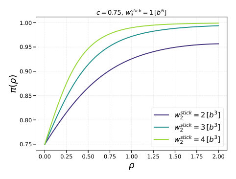
<figcaption class="paper-figure-caption"><b>Fig 1.</b> FIG. 1. Sticker probability π (Eq. (39)) as a function of monomer density ρ, for w2/b3 = w3/b6 = wstick 3 /b6 = 1, q = 1 and for c = 0.75 and wstick 2 /b3 = 2, 3, 4 (see legend). The probability π is bounded as c ≤π ≤1, and for the same ρ it increases as a function of the sticker attraction strength wstick 2 .</figcaption>
</figure>
<figure class="paper-figure-card">

<figcaption class="paper-figure-caption"><b>Fig 2.</b> Fig. 2 shows an example of this geometric construction for the annealed system with N = 1 and c = 0.5 and the rest of the parameters fixed as reported in the beginning</figcaption>
</figure>
<figure class="paper-figure-card">

<figcaption class="paper-figure-caption"><b>Fig 3.</b> FIG. 2. (a) Free energy profiles for the annealed model FA(ρ) (Eq. (38) with the solution of the mass-action relation Eq. (39)) as a function of the monomer density ρ, for N = 1 and c = 0.5 and parameters w2/b3 = 1, w3/b6 = wstick 3 /b6 = 1 and q = 1 (see Sec. III for details). The profiles are for representative values of the sticker-mediated attraction strength wstick 2 smaller than (blue line), equal to (red line), and larger than (green line) the critical value wstick 2,c ≃3.71 (see legend). (b) Corresponding osmotic pressure profiles ΠA(ρ1) −ΠA(ρ) (Eq. (57)) as a function of the monomer density ρ, measured at the coexistence of the two stable phases ρ1 &lt; ρ2. The dashed horizontal line...</figcaption>
</figure>
<figure class="paper-figure-card">

<figcaption class="paper-figure-caption"><b>Fig 4.</b> Fig. 3 shows curves of phase diagrams in the “monomer density / sticker-mediated attraction strength (ρ, wstick 2 )” plane, for associating polymers with annealed (red solid lines) and quenched (blue solid lines) sticker disorder and sticker fraction c = 0.50. Panels (a1) and (a2) are for the limiting case of very short polymers (N = 1), while panels (b1) and (b2) are for long polymers (N = 100). In all considered cases the system undergoes a liquid- liquid phase separation bounded by a binodal termi- nating at a critical point (filled circle), arising from the competition between excluded-volume repulsion and sticker-mediated interactions. The parameter wstick 2 con- trols the effective...</figcaption>
</figure>
<figure class="paper-figure-card">

<figcaption class="paper-figure-caption"><b>Fig 5.</b> FIG. 3. Annealed (red lines) and quenched (blue lines) phase diagrams in the “monomer density / sticker-mediated attraction strength (ρ, wstick 2 )” plane, for sticker fraction c = 0.50 and parameters w2/b3 = 1, w3/b6 = wstick 3 /b6 = 1 and q = 1 (see Sec. III for details). (a1, a2) Results for polymer chains of N = 1 monomers. (b1, b2) Results for polymer chains of N = 100 monomers. In each panel, the position of the critical point is marked by the filled circle. For N = 100, the dashed lines denote the sol-gel transition (from left to right). Increasing N suppresses the translational entropy contribution and favors phase separation.</figcaption>
</figure>
</div>

<p><strong>Summary.</strong> This paper develops a mean-field density-functional theory for associating polymers with sticker interactions under both mobile (annealed) and frozen (quenched) disorder. It rigorously shows that the statistical treatment of disorder leads to qualitatively different thermodynamic predictions, particularly regarding the emergence of an order parameter. This work advances the understanding of complex self-assembly processes relevant to biomolecular condensates.</p>
<p><strong>Why it may be interesting.</strong> While focused on polymer physics, the rigorous comparison between annealed and quenched disorder statistics in a complex many-body system is highly relevant to understanding glassy dynamics or disordered quantum materials where local environments are fluctuating versus fixed.</p>
<details>
<summary>Detailed structure</summary>
<p><strong>Main problem.</strong> The study develops a density-functional theory to determine the phase behavior of associating polymers when the sticker interactions are subject to either annealed (mobile) or quenched (fixed) disorder.</p>
<p><strong>Main result.</strong> The theory yields distinct results for the two disorder types: the annealed case supports an independent bonding order parameter, while the quenched case primarily causes renormalization of interaction parameters. Both approaches provide a systematic starting point for fluctuation corrections.</p>
<p><strong>Method.</strong> The authors employ field-theoretic methods, extending existing schemes to formulate the model at the mean-field level using saddle point approximations for both annealed (ensemble averaging) and quenched (replica trick) disorder treatments.</p>
<p><strong>Model / system.</strong> The system consists of polymer chains with monomers possessing binary 'stickers' that mediate reversible attractions. The Hamiltonian includes terms for chain connectivity, volume interactions ($w_2, w_3$), and sticker-sticker interactions ($\propto w_{	ext{stick}}^2, w_{	ext{stick}}^3$).</p>
<p><strong>Key observables.</strong> Free energy density ($eta F/V$), scalar order parameter (for the annealed case), and renormalized effective interaction parameters.</p>
<p><strong>Important parameters / regimes.</strong> Sticker concentration ($c$ or $
ho_{st}$), monomer density ($
ho$), and interaction strengths ($w_{    ext{stick}}$). Key regimes include low sticker density limits and comparisons between annealed/quenched statistics.</p>
<p><strong>Assumptions / limitations.</strong> The primary approximations are the mean-field solution via saddle point methods, and for the quenched case, the use of the replica trick. The theory is microscopic but provides a starting point beyond these approximations.</p>
<p><strong>Figures summary.</strong> Figure 4 likely shows phase diagrams illustrating distinct coexistence boundaries and critical points in the $(
ho/
ho_c, w_{	ext{stick}}^2/w_{	ext{stick},c}^2)$ plane for annealed versus quenched disorder.</p>
<p><strong>Paper structure.</strong> The paper develops the theory by first establishing the Hamiltonian and reformulating it using density fields. It then derives separate mean-field solutions for the annealed (ensemble average) and quenched (replica trick) cases, comparing their resulting free energy functionals and phase behavior.</p>
</details>
<details>
<summary>Abstract</summary>
<p>We develop a density-functional theory for solutions of associating polymers where attractions among charged monomers (stickers) are represented by local binary degrees of freedom, which are randomly placed along the chains. Extending the original Garel and Orland's field-theoretic scheme for single-chain systems to an ensemble of interacting chains, we give the exact formulations of the model in both cases of annealed and quenched distributions of charges which we solve at the mean-field level. The solution produces qualitatively different free energy functionals. In the annealed case, the theory naturally yields a nontrivial scalar order parameter for the fraction of bonded sticker monomers and a self-consistent mass-action law at the saddle point. By contrast, in the quenched case no independent bonding order parameter emerges and the main effect is a renormalization of the effective two-body and three-body interaction parameters. The formulation is microscopic at the Hamiltonian level and, within the same field-theoretic framework, provides a systematic starting point for fluctuation corrections beyond the mean-field approximation.</p>
</details>
<p><sub><a href="#top">↑ back to top</a></sub></p>

<p><a id="paper-2607.16645"></a></p>
<h3 id="geometric-power-capacity-of-coherent-ergotropy-in-quantum-batteries"><a href="http://arxiv.org/abs/2607.16645v1">Geometric Power Capacity of Coherent Ergotropy in Quantum Batteries</a></h3>
<p><strong>Authors:</strong> Dong-Ping Xuan, Zhi-Xi Wang, Shao-Ming Fei<br>
<strong>Type:</strong> theory · <strong>Category:</strong> other · <strong>PDF:</strong> <a href="https://arxiv.org/pdf/2607.16645v1">https://arxiv.org/pdf/2607.16645v1</a><br>
<strong>Analysis basis:</strong> full PDF text, analyzed in chunks
<strong>Topic relevance:</strong> <code>methods for driven-dissipative</code> <strong>3/5</strong> · <code>non-equilibrium dynamics</code> <strong>3/5</strong> · <code>entanglement &amp; information structure</code> <strong>2/5</strong> · <code>non-equilibrium universality</code> <strong>2/5</strong> · <code>Keldysh / 2PI / non-Gaussian methods</code> <strong>1/5</strong> · <code>correlated / nonlocal dissipation</code> <strong>1/5</strong> · <code>driven-dissipative phase transition</code> <strong>1/5</strong></p>
<div class="figure-strip-hint">↔ Scroll figures horizontally</div>
<div class="paper-figures-scroll">
<figure class="paper-figure-card">

<figcaption class="paper-figure-caption"><b>Fig 1.</b> FIG. 2: The initial state ρ yields active state σρ after incoherent er- gotropy extraction. The unitary process σρ →Pρ extracts coherent ergotropy Ec over distance Dext c , defining the geometric power capac- ity Πc(ρ) = Ec/Dext c .</figcaption>
</figure>
<figure class="paper-figure-card">

<figcaption class="paper-figure-caption"><b>Fig 2.</b> FIG. 1: Geometric illustration of the coherent extraction distance Dext c (ρ) for a qubit battery. The green arc shows the minimal unitary distance from the active state σρ to the passive state Pρ, with the z- axis defined by H0.</figcaption>
</figure>
<figure class="paper-figure-card">

<figcaption class="paper-figure-caption"><b>Fig 3.</b> FIG. 3: Analytical qubit example. In this work, we take ϵ = 1. The three panels show, respectively, the coherent ergotropy Ec(ρ)/ϵ[Eq. (19)], the coherent ergotropy extraction distance Dext c (ρ)[Eq. (20)], and the geometric power capacity for coherent ergotropy Πc(ρ)/ϵ [Eq. (21)] as functions of the coherence amplitude c = p</figcaption>
</figure>
<figure class="paper-figure-card">

<figcaption class="paper-figure-caption"><b>Fig 4.</b> FIG. 4: Qutrit example. The three panels show the coherent ergotropy Ec [Eq. (25)], the coherent ergotropy extraction distance Dext c [Eq. (26)], and the geometric power capacity of coherent ergotropy Πc [Eq. (27)] as functions of the normalized coherence strength η = |c|/ √g1g3. Different curves correspond to fixed inverse temperatures β = 0.5, 1, 2, 4.</figcaption>
</figure>
<figure class="paper-figure-card">

<figcaption class="paper-figure-caption"><b>Fig 5.</b> FIG. 5: Coherent extension of the three-level discharging model. The three panels show the total ergotropy E(ρθ) [Eq. (35)], the extraction distance D(ρθ, ρp) = θ [Eq. (36)], and the corresponding the geometric power capacity of coherent ergotropy Π(ρθ) [Eq. (37)] as functions of the rotation angle θ. Different curves correspond to different values of βh.</figcaption>
</figure>
</div>

<p><strong>Summary.</strong> This paper introduces the 'geometric power capacity' ($\Pi_c(
ho)$) as a unified resource measure for quantifying coherent work extractable from quantum batteries. It defines this capacity by dividing the coherent ergotropy by the minimal geometric distance required for extraction. The main result establishes $\Pi_c(
ho)$ as an upper bound on the actual achievable power, providing a powerful theoretical tool for analyzing energy harvesting rates in quantum systems.</p>
<p><strong>Why it may be interesting.</strong> This work provides a rigorous, geometric measure ($\Pi_c$) that unifies energy extraction (ergotropy) with operational constraints (distance/time), which is highly relevant for understanding non-equilibrium quantum processes in open or driven systems.</p>
<details>
<summary>Detailed structure</summary>
<p><strong>Main problem.</strong> The paper aims to develop a geometric characterization of coherent ergotropy extraction from quantum batteries by defining a 'geometric power capacity' ($\Pi_c(
ho)$). This capacity quantifies the maximum rate at which coherence-derived work can be extracted relative to the minimal unitary distance required.</p>
<p><strong>Main result.</strong> The derived quantity, $\Pi_c(
ho) = \mathcal{E}_c(
ho)/D_{	ext{ext}}^c(
ho)$, is proven to serve as a true capacity, bounding the actual coherent discharging power $P_{	ext{ext}}^c$ by $
u\Pi_c(
ho)$ for any driving Hamiltonian with norm $\le 
u$.</p>
<p><strong>Method.</strong> The methodology combines concepts from quantum thermodynamics (ergotropy), geometric quantum information theory (quantum charging distance), and resource theories to define a ratio that acts as an upper bound on achievable power.</p>
<p><strong>Model / system.</strong> The model is the quantum battery, described by an initial state $
ho$ and governed by a Hamiltonian $H_0$. The analysis is applied to various systems including qubits, qutrits, and three-level systems, allowing for explicit calculation of $\Pi_c(
ho)$ in these specific settings.</p>
<p><strong>Key observables.</strong> Coherent Ergotropy ($\mathcal{E}_c(
ho)$), Coherent Extraction Distance ($D_{	ext{ext}}^c(
ho)$), Geometric Power Capacity ($\Pi_c(
ho)$), and actual coherent discharging power ($P_{	ext{ext}}^c$).</p>
<p><strong>Important parameters / regimes.</strong> Driving Hamiltonian norm ($
u$), coherence parameters (e.g., $R, |z|$ for qubits; $\epsilon_i$ for qutrits).</p>
<p><strong>Assumptions / limitations.</strong> The analysis assumes that the coherent extraction process can be characterized by a ratio of extractable work to the minimal geometric distance required for that transformation.</p>
<p><strong>Paper structure.</strong> The paper first introduces the concepts of ergotropy and quantum charging distance, defining $\Pi_c(
ho)$. It then proves the capacity bound relating actual power to $\Pi_c(
ho)$ using general Hamiltonian constraints. Finally, it derives explicit formulas for $\Pi_c(
ho)$ by applying the framework to specific models like qubits, qutrits, and three-level systems.</p>
</details>
<details>
<summary>Abstract</summary>
<p>We explore coherent ergotropy extraction in quantum batteries from a resource-geometric point of view. For an initial state $ρ$, we quantify the coherent extraction process by the coherent ergotropy $\mathcal{E}_c(ρ)$ and the coherent extraction distance $D_c^{\rm ext}(ρ)$ between the active state $σ_ρ$ and the passive state $P_ρ$. This defines the geometric power capacity $Π_c(ρ)=\mathcal{E}_c(ρ)/D_c^{\rm ext}(ρ)$, which measures the coherent ergotropy released unit minimal unitary distance. We prove that, for any driving Hamiltonian satisfying $\|V_t\|\leqν$, the actual coherent discharging power is bounded by $P_c^{\rm ext}(ρ;V_t)\leq νΠ_c(ρ)$, showing that $Π_c(ρ)$ is a capacity under unit driving norm rather than the power of a particular protocol. General bounds on $Π_c(ρ)$ are derived by combining relative entropy bounds on coherent ergotropy with geometric bounds on the coherent extraction distance. We also formulate coherence measure induced bounds and protocol-corrected capacities involving the effective speed of a given Hamiltonian. Qubit and qutrit examples demonstrate that $Π_c(ρ)$ captures a resource-geometric feature of coherent discharging beyond coherent ergotropy or coherence measures alone.</p>
</details>
<p><sub><a href="#top">↑ back to top</a></sub></p>

<p><a id="paper-2607.16592"></a></p>
<h3 id="quantum-dynamics-of-a-levitated-ferromagnetic-gyroscope"><a href="http://arxiv.org/abs/2607.16592v1">Quantum dynamics of a levitated ferromagnetic gyroscope</a></h3>
<p><strong>Authors:</strong> Derek F. Jackson Kimball<br>
<strong>Type:</strong> theory · <strong>Category:</strong> other · <strong>PDF:</strong> <a href="https://arxiv.org/pdf/2607.16592v1">https://arxiv.org/pdf/2607.16592v1</a><br>
<strong>Analysis basis:</strong> full PDF text, analyzed in chunks
<strong>Topic relevance:</strong> <code>exotic spin models in light-matter</code> <strong>3/5</strong> · <code>spintronics-quantum-optics interface</code> <strong>3/5</strong> · <code>analog quantum simulation</code> <strong>2/5</strong> · <code>quantum measurements</code> <strong>2/5</strong> · <code>correlated cavity matter</code> <strong>1/5</strong> · <code>driven-dissipative phase transition</code> <strong>1/5</strong> · <code>non-equilibrium dynamics</code> <strong>1/5</strong></p>
<div class="figure-strip-hint">↔ Scroll figures horizontally</div>
<div class="paper-figures-scroll">
<figure class="paper-figure-card">

<figcaption class="paper-figure-caption"><b>Fig 1.</b> FIG. 1. Schematic diagram of the geometry used in our model of a levitated ferromagnetic gyroscope (LFG). The LFG is represented by the cylinder. The magnetic field B (blue ar- row) is along ˆz. The spin S (red arrow), pointing along ˆn, is antiparallel to the magnetic moment µ. The direction of the unit vector is specified as ˆn = (sin θ cos ϕ, sin θ sin ϕ, cos θ). ˆx1 is perpendicular to ˆn and lies in the xy-plane.</figcaption>
</figure>
<figure class="paper-figure-card">

<figcaption class="paper-figure-caption"><b>Fig 2.</b> FIG. 3. The LFG precession frequency ω as a function of the tilt angle θ for the case of Jz = 0.</figcaption>
</figure>
<figure class="paper-figure-card">

<figcaption class="paper-figure-caption"><b>Fig 3.</b> FIG. 2. The precession frequency ω/(2π) as a function of the Larmor frequency Ω/(2π) for a fixed angle of the LFG axis with respect to the vertical z-axis (along B) for the case of no libration (i.e., no nutation). The Einstein-de Haas frequency is chosen to be ωI = 2π × 50 Hz. The upper plot shows the behavior for positive cos θ, specifically for θ = π/4, where the fast precession (the red curve starting at ω = ωI/ cos θ for Ω= 0) and the slow precession (the blue curve starting at ω = 0 for Ω= 0) converge at the “branch point” where Ω= ωI/(4 cos θ) and ω = ωI/(2 cos θ) (marked by the purple dot). The lower plot shows the behavior for negative cos θ, specifically for θ = 3π/4 (the fast...</figcaption>
</figure>
<figure class="paper-figure-card">

<figcaption class="paper-figure-caption"><b>Fig 4.</b> FIG. 4. The LFG precession frequency ω/(2π) (blue curve, upper plot) and the tilt angle θ (lower plot) as a function of the Larmor frequency Ω/(2π) ∝B for the case of Jz = 0. The Einstein-de Haas frequency is chosen to be ωI = 2π × 50 Hz. The ω = Ωline is shown in gray for reference in the upper plot.</figcaption>
</figure>
<figure class="paper-figure-card">

<figcaption class="paper-figure-caption"><b>Fig 5.</b> FIG. 5. Precession of an LFG with relatively small amplitude oscillations of the tilt angle θ corresponding to libration (nutation). Details of the calculations used to generate the plots are given in Appendix B. For all plots we choose the Einstein-de Haas frequency to be ωI = 2π ×50 Hz, the Larmor frequency to be Ω= 2π ×1 Hz, and the projection of the total angular momentum along z (the magnetic field axis) to be zero. The upper plots [(a), (b), and (c)] correspond to a libration amplitude of δθ0 = 0.01 radians and the lower plots correspond to a larger libration amplitude of δθ0 = 0.1 radians. Plots (a) and (d) show the path of the unit vector ˆn along the direction of the spin S (see...</figcaption>
</figure>
</div>

<p><strong>Summary.</strong> This paper models the quantum dynamics of a levitated ferromagnetic gyroscope, treating it as a coupled spin-rotor system. By quantizing the rotational motion, the authors predict discrete energy levels and demonstrate that radio-frequency fields can induce controlled transitions between these states. This establishes the LFG as a highly controllable mesoscopic quantum sensor platform.</p>
<p><strong>Why it may be interesting.</strong> This work directly addresses quantum control and sensing using macroscopic quantum objects (the LFG). The ability to drive specific transitions ($\Delta m = \pm 1$, $\Delta n = \pm 1$) via RF fields is analogous to manipulating qubits or performing spectroscopy in cavity QED systems.</p>
<details>
<summary>Detailed structure</summary>
<p><strong>Main problem.</strong> The paper develops a quantum model for the rotational dynamics of a levitated ferromagnetic gyroscope (LFG), focusing on the interplay between intrinsic spin, mechanical angular momentum, and magnetic torque.</p>
<p><strong>Main result.</strong> It establishes that LFGs can function as controllable mesoscopic quantum systems, enabling ladder spectroscopy via radio-frequency driving and providing a platform to search for exotic interactions like dark matter couplings.</p>
<p><strong>Method.</strong> The analysis involves deriving the Hamiltonian from classical mechanics, quantizing the system using angular momentum operators, and employing approximations for small librational amplitudes near specific orientations.</p>
<p><strong>Model / system.</strong> The physical system is a freely floating LFG. The model incorporates both intrinsic spin ($\mathbf{S}$) and mechanical angular momentum ($\mathbf{L}$), leading to conserved total angular momentum projection $J_z$. The dynamics are governed by the interplay of these two coupled degrees of freedom.</p>
<p><strong>Key observables.</strong> Precession frequency ($\omega$), energy levels ($E_{m,n}$), magnetization $\langle S_z 
angle$, and transition probabilities driven by RF fields.</p>
<p><strong>Important parameters / regimes.</strong> Quantum precession scale $\Omega_Q = \hbar/I$; magnetic field strength ($\mathbf{B}$); Larmor frequency ($\Omega$); intrinsic spin $S$.</p>
<p><strong>Assumptions / limitations.</strong> The macrospin $\mathbf{S}$ is treated as a classical variable locked to the lattice direction, and the analysis often relies on small-angle approximations for libration.</p>
<p><strong>Figures summary.</strong> Figure 1 schematically illustrates the LFG geometry with the magnetic field applied along the z-axis, showing the relationship between spin ($\mathbf{S}$) and the external field ($\mathbf{B}$).</p>
<p><strong>Paper structure.</strong> The paper progresses from defining the coupled classical/quantum dynamics via Lagrangian/Hamiltonian formulations to deriving simplified Hamiltonians near the equator. It then quantizes these models to find discrete energy levels, culminating in predictions for spectroscopic measurements and applications.</p>
</details>
<details>
<summary>Abstract</summary>
<p>We develop a quantum model for the rotational dynamics of a freely floating levitated ferromagnetic gyroscope (LFG), emphasizing the interplay between intrinsic spin $\boldsymbol{S}$, mechanical angular momentum $\boldsymbol{L}$, and magnetic torque. The conserved total angular momentum projection along the $z$-directed magnetic field $\boldsymbol{B}$, $J_z=S_z+L_z$, is quantized, leading in the small-libration-amplitude limit to discrete precessional states $|m\rangle$ (eigenstates of $J_z$ with eigenvalues $J_z = m\hbar$) and librational harmonic oscillator states $|n\rangle$ ($n=0,1,2,\ldots$). The discreteness of the energies and dynamical variables is governed by the quantum precession scale $Ω_Q=\hbar/I$, where $I$ is the moment of inertia of the LFG. We find that the phenomenon of LFG precession persists into high-field regimes where the magnitude of the rotational angular momentum associated with precession exceeds the total intrinsic spin. We analyze the complementary quantum limits of localized semiclassical LFG orientation wave packets and exact $J_z$-eigenstates $|m\rangle$, clarifying the relation between classical precession signals and the underlying quantized spin-rotor dynamics. We further show that radio-frequency fields can drive $Δm = \pm 1$ and $Δn = \pm 1$ transitions, enabling ladder spectroscopy, tilt-angle control, and sideband-like coupling between precession and libration. The coupled dynamics also exhibit branch-point magnetic resonances where precession and librational motion become strongly coupled. These results establish a framework for using LFGs not only as ultrasensitive torque and magnetic-field sensors, but also as controllable mesoscopic quantum systems. The techniques developed here may be applied to searches for exotic, beyond-the-standard model spin-dependent interactions, ultralight dark matter, and spin-gravity couplings.</p>
</details>
<p><sub><a href="#top">↑ back to top</a></sub></p>

<p><a id="paper-2607.16566"></a></p>
<h3 id="signal-amplification-in-simple-metal-insulator-transition-devices"><a href="http://arxiv.org/abs/2607.16566v1">Signal amplification in simple metal-insulator transition devices</a></h3>
<p><strong>Authors:</strong> Victor Palin, Nareg Ghazikhanian, Matthew Frame, Yayoi Takamura, Ivan K. Schuller, Pavel Salev<br>
<strong>Type:</strong> experiment · <strong>Category:</strong> disordered systems and neural networks · <strong>PDF:</strong> <a href="https://arxiv.org/pdf/2607.16566v1">https://arxiv.org/pdf/2607.16566v1</a><br>
<strong>Analysis basis:</strong> full PDF text, analyzed in chunks
<strong>Topic relevance:</strong> <code>driven-dissipative phase transition</code> <strong>3/5</strong> · <code>methods for driven-dissipative</code> <strong>3/5</strong> · <code>spintronics-quantum-optics interface</code> <strong>2/5</strong> · <code>analog quantum simulation</code> <strong>1/5</strong> · <code>correlated / nonlocal dissipation</code> <strong>1/5</strong> · <code>exotic spin models in light-matter</code> <strong>1/5</strong> · <code>non-equilibrium dynamics</code> <strong>1/5</strong> · <code>non-equilibrium universality</code> <strong>1/5</strong></p>
<div class="figure-strip-hint">↔ Scroll figures horizontally</div>
<div class="paper-figures-scroll">
<figure class="paper-figure-card">

<figcaption class="paper-figure-caption"><b>Fig 1.</b> Fig. 1. a. I-V characteristics recorded using several series resistors, Rs. All curves display a characteristic NDR and a rapid MIT switching, which can be tuned by varying Rs. The inset shows an SEM image of a 2×1 µm² LSMO device. b. Electrical circuit used for the amplification measurements. A function generator supplies a superimposed small AC excitation + DC bias signal. Two oscilloscope channels, VFG and Vout, are used to monitor the voltages. c. Schematic illustrating the modulation of the LSMO insulating barrier size by a small AC excitation. d. Input and output AC signals recorded using a DC bias of 1 V (top panel) and 4.59 V (bottom panel). When the LSMO device is biased far away...</figcaption>
</figure>
</div>

<p><strong>Summary.</strong> This work demonstrates that Metal-Insulator Transition (MIT) devices can function as highly efficient, local amplifiers suitable for neuromorphic hardware. By biasing the device into a Negative Differential Resistance (NDR) regime near the phase transition, the authors achieved amplification factors exceeding 10x. This establishes a framework for integrating artificial neurons and axons using nonlinear electronic materials.</p>
<p><strong>Why it may be interesting.</strong> While focused on solid-state electronics, the core concept—using strong nonlinearities (like those found in correlated materials or phase transitions) to engineer non-linear signal processing elements—is relevant for understanding energy dissipation and information transfer in complex quantum/many-body systems.</p>
<details>
<summary>Detailed structure</summary>
<p><strong>Main problem.</strong> Signal dissipation in large-scale neural networks requires local signal amplification at neuron-synapse connections, which is difficult to achieve with conventional electronics.</p>
<p><strong>Main result.</strong> The authors demonstrated robust signal amplification (up to ~11.5x) using simple two-terminal devices made from a metal-insulator transition material.</p>
<p><strong>Method.</strong> Amplification was achieved by operating the device near its phase transition verge and exploiting negative differential resistance (NDR) within a voltage divider circuit.</p>
<p><strong>Model / system.</strong> The physical platform is a Metal-Insulator Transition (MIT) material, specifically LSMO film on $   ext{SrTiO}_3$, integrated into a two-terminal amplifier circuit. The operation relies on the strong nonlinearity associated with MIT switching.</p>
<p><strong>Key observables.</strong> Signal amplification factor ($\sim 11.5	imes$), AC gain ($A_{C	ext{gain}}$), and the device's $I–V$ characteristics exhibiting NDR.</p>
<p><strong>Important parameters / regimes.</strong> DC bias voltage, AC excitation amplitude, series resistance ($R_s$), and temperature are key parameters controlling the amplification gain.</p>
<p><strong>Assumptions / limitations.</strong> High amplification is intrinsically linked to operating in the MIT switching regime where strong nonlinearities (NDR) exist; distortion is a trade-off for high gain.</p>
<p><strong>Figures summary.</strong> Figures illustrate non-linear I-V curves showing NDR and tunable MIT switching, comparing attenuated vs. strongly amplified AC output signals based on DC bias settings.</p>
<p><strong>Paper structure.</strong> The paper establishes the need for local signal amplification in neuromorphic hardware, details the use of MIT devices to achieve this via NDR operation, demonstrates dynamic control over gain by adjusting bias/excitation, and proposes a model linking gain to transport characteristics.</p>
</details>
<details>
<summary>Abstract</summary>
<p>Signal dissipation in large-scale neural networks can lead to information loss and ultimately to computational failures, necessitating local signal amplification at neuron - synapse connections. In biological nervous systems, axons are responsible for local signal amplification. Translating axon functionality into hardware, i.e., the ability to amplify and transmit signals without loss, is non-trivial because emulating the human brain implies building networks composed of ~10 billion interconnected neurons, each requiring a dedicated compact and scalable amplifier. Here, we demonstrate signal amplification in simple two-terminal devices made of a metal-insulator transition material. By operating the devices on the verge of the phase transition and taking advantage of negative differential resistance, we achieve robust signal amplification up to a factor of ~11.5. We also demonstrate the amplification of spiking sequences generated by a real neuristor, opening new exciting opportunities for the direct integration of artificial neurons and axons. The amplification can be controlled by easily adjustable experimental parameters, including DC bias, AC excitation, series resistance, and temperature. We further propose a model that predicts the gain using readily observable transport characteristics. Our results establish a framework for developing and optimizing axon-like amplification functionalities in nonlinear electronic materials.</p>
</details>
<p><sub><a href="#top">↑ back to top</a></sub></p>

<p><a id="paper-2607.17583"></a></p>
<h3 id="single-atom-sensor-for-low-frequency-electric-field"><a href="http://arxiv.org/abs/2607.17583v1">Single-atom sensor for low-frequency electric field</a></h3>
<p><strong>Authors:</strong> Quan Yuan, Shuang-Qing Dai, Tai-Hao Cui, Pei-Dong Li, Yuan-Zhang Dong, Zhuo-Zhu Wu, Ji Li, Fei Zhou, Jian-Qi Zhang, Liang Chen, Mang Feng<br>
<strong>Type:</strong> experiment · <strong>Category:</strong> other · <strong>PDF:</strong> <a href="https://arxiv.org/pdf/2607.17583v1">https://arxiv.org/pdf/2607.17583v1</a><br>
<strong>Analysis basis:</strong> full PDF text, analyzed in chunks
<strong>Topic relevance:</strong> <code>quantum measurements</code> <strong>3/5</strong> · <code>analog quantum simulation</code> <strong>2/5</strong> · <code>non-equilibrium dynamics</code> <strong>2/5</strong> · <code>QC/QI experiment</code> <strong>1/5</strong> · <code>driven-dissipative phase transition</code> <strong>1/5</strong> · <code>measurement-induced transitions</code> <strong>1/5</strong> · <code>methods for driven-dissipative</code> <strong>1/5</strong> · <code>quantum optics experiment</code> <strong>1/5</strong></p>
<div class="figure-strip-hint">↔ Scroll figures horizontally</div>
<div class="paper-figures-scroll">
<figure class="paper-figure-card">

<figcaption class="paper-figure-caption"><b>Fig 1.</b> FIG. 1. Principle of the beat frequency measurement by single-ion phonon laser. (a) The scheme of the beat fre- quency measurement by single-ion phonon laser, where the vibrational motion of the single ion is modulated by the input signal St, and the responses are characterized by the evolution of the phase Φ and amplitude A of the phonon laser. (b) Trajectories in phase-amplitude coor- dinate of the phonon laser.</figcaption>
</figure>
<figure class="paper-figure-card">

<figcaption class="paper-figure-caption"><b>Fig 2.</b> FIG. 2. Beat frequency measurement of sinusoidal input signals. Evolution of the measured phase Φ (red) and amplitude A (blue) of the phonon laser with input signal of (a) 0.2 mHz and (b) 2 Hz. The red and blue lines are the sinusoidal fitting results of the data points.</figcaption>
</figure>
<figure class="paper-figure-card">

<figcaption class="paper-figure-caption"><b>Fig 3.</b> FIG. 3. Evaluation of the accuracy of Φ. (a) The fitting amplitude Efit of Φ versus the given amplitude Vt of the input signal (Vt, 0.05 Hz,0), with Vt varying from 0.42 mV to 2.92 mV. The red line is a linear fit of the data points with the slope of ∂Efit/∂Vt = 136.8 mrad/mV. (b) The fitting phase ϕfit of Φ versus the given phase ϕt of the input signal (1.25 mV, 0.05 Hz, ϕt). Error bars are statistical standard errors from 10 measurements for each data point with ttot = 20 s for each measurement.</figcaption>
</figure>
<figure class="paper-figure-card">

<figcaption class="paper-figure-caption"><b>Fig 4.</b> FIG. 4. The influence of different noise amplitudes on the fitted amplitude and frequency obtained via the evo- lution of the phonon laser’s (a) phase and (b) ampli- tude with an input signal (1.25 mV, 0.05 Hz, 0), where the fitted amplitude/frequency obtained via fitting the evolution of phonon laser’s phase and amplitude to Eq. (2) and Eq. (3) respectively are marked as Ep/∆p and EA/∆A.Blue error bars are the statistical standard error of 10 measurements, and red error bars are the sinusoidal fitting error.</figcaption>
</figure>
</div>

<p><strong>Summary.</strong> The paper introduces a novel single-atom sensor utilizing a trapped $  ext{40Ca}^+$ ion acting as an injection-locked phonon laser to measure low-frequency electric fields. By employing the beat frequency technique, the method efficiently extracts the amplitude, frequency, and phase of the weak input signal in one measurement. This approach achieves state-of-the-art sensitivity while remaining robust against noise, opening pathways for biomedical and geophysical monitoring.</p>
<p><strong>Why it may be interesting.</strong> This work represents an advanced application of trapped-ion quantum systems for precision sensing outside typical quantum computing regimes. The use of phonon lasers and beating techniques demonstrates sophisticated control over mechanical/vibrational modes coupled to external fields, which is highly relevant to open quantum system dynamics.</p>
<details>
<summary>Detailed structure</summary>
<p><strong>Main problem.</strong> The challenge is achieving high-sensitivity, miniaturized detection of low-frequency electric field (LFEF) signals (30 kHz to 300 kHz), as conventional antennas are severely limited by the long signal wavelengths.</p>
<p><strong>Main result.</strong> The authors demonstrated a practical single-ion sensor achieving a sensitivity of $404 	ext{ µV}/(	ext{m} \cdot 	ext{Hz}^{1/2})$ and a detection limit of $61.5 	ext{ µV}/	ext{m}$.</p>
<p><strong>Method.</strong> They combine the beat frequency technique with an injection-locked phonon laser oscillation to simultaneously extract the input signal's frequency, phase, and amplitude from a single measurement.</p>
<p><strong>Model / system.</strong> The physical system is a single trapped ion ($  ext{40Ca}^+$) confined in a surface-electrode trap (SET), which acts as an injection-locked phonon laser. The sensing mechanism exploits the ion's high intrinsic sensitivity to external electric fields via Coulomb interaction.</p>
<p><strong>Key observables.</strong> The evolution of the phonon laser's phase ($\Phi$) and amplitude ($A$), monitored by fitting accumulated photon counts from scattering.</p>
<p><strong>Important parameters / regimes.</strong> Frequency range (30 kHz to 300 kHz); Sensitivity: $404 	ext{ µV}/(	ext{m} \cdot 	ext{Hz}^{1/2})$; Detection Limit: $61.5 	ext{ µV}/	ext{m}$.</p>
<p><strong>Assumptions / limitations.</strong> The analysis assumes approximations like $V_t \ll V_i$ and $|\Delta| \ll \omega_i$. The technique is presented as robust against noise.</p>
<p><strong>Figures summary.</strong> Figure 1 illustrates the beat frequency setup. Figure 2 shows measured $\Phi$ and $A$ evolving for sinusoidal inputs, demonstrating the beating principle. Figures 3 and 4 detail parameter extraction relationships and robustness against white noise.</p>
<p><strong>Paper structure.</strong> The paper establishes the problem of LFEF sensing limitations with conventional antennas. It then details the methodology using a single-ion phonon laser combined with beat frequency analysis to enable simultaneous measurement of signal parameters. Finally, it presents the achieved high sensitivity and discusses applications.</p>
</details>
<details>
<summary>Abstract</summary>
<p>Precision measurement of low-frequency electric field (LFEF) signals with frequency from 30 kHz to 300 kHz is crucial for advancing both fundamental science and practical applications, owing to their unique frequency regime. For conventional electromagnetic antennas, the long wavelength (i.e., several kilometers) of the LFEF leads to a severe size constraint that efficient radiation becomes challenging to achieve when the antenna size is much smaller than the long wavelength of the LFEF signals, which in turn results in a reduction of measurement sensitivity and compromises antenna's performance. By exploiting the high intrinsic sensitivity of cold trapped ions to weak alternating electric signals via Coulomb interaction, we demonstrate a single-ion phonon laser sensor acted by an injection-locked 40Ca+ ion confined in a surface-electrode trap. Combining the beat frequency technique with the injection-locked phonon laser oscillation, we demonstrate a practical and efficient approach for simultaneous extraction of the frequency, phase, and amplitude from a single measurement, without the need for sideband cooling. This approach achieves precision detection for LFEF signals with the sensitivity of 404 uV/(m * Hz1/2) and the detection limit of 61.5 uV/m. Besides, this approach also shows remarkable robustness against noise. Our study helps realizing practical single-atom sensors in the low-frequency regime, opening avenues for applications in subsurface communication, precision metrology, mass spectrometry, and biomedical monitoring.</p>
</details>
<p><sub><a href="#top">↑ back to top</a></sub></p>

<p><a id="paper-2607.17072"></a></p>
<h3 id="floquet-driving-of-enzymatic-reactions-counting-statistics-and-long-time-currents"><a href="http://arxiv.org/abs/2607.17072v1">Floquet Driving of Enzymatic Reactions: Counting Statistics and Long-Time Currents</a></h3>
<p><strong>Authors:</strong> Yuki Watanabe, Yuki Ishiguro, Takashi Oka<br>
<strong>Type:</strong> theory · <strong>Category:</strong> statistical mechanics · <strong>PDF:</strong> <a href="https://arxiv.org/pdf/2607.17072v1">https://arxiv.org/pdf/2607.17072v1</a><br>
<strong>Analysis basis:</strong> full PDF text, analyzed in chunks
<strong>Topic relevance:</strong> <code>methods for driven-dissipative</code> <strong>3/5</strong> · <code>non-equilibrium dynamics</code> <strong>3/5</strong> · <code>non-equilibrium universality</code> <strong>2/5</strong> · <code>Keldysh / 2PI / non-Gaussian methods</code> <strong>1/5</strong> · <code>correlated / nonlocal dissipation</code> <strong>1/5</strong> · <code>driven-dissipative phase transition</code> <strong>1/5</strong></p>
<div class="figure-strip-hint">↔ Scroll figures horizontally</div>
<div class="paper-figures-scroll">
<figure class="paper-figure-card">

<figcaption class="paper-figure-caption"><b>Fig 1.</b> Fig. 1. Driving protocols schematically shown for (Left) continuous modulation, and for (Right) stepwise constant switching of the reaction rates studied in this work.</figcaption>
</figure>
<figure class="paper-figure-card">

<figcaption class="paper-figure-caption"><b>Fig 2.</b> Fig. 3. Schematic representation of the driving sequences. (Left) Anti-clockwise driving sequence γac = { ˆ W 0, ˆ W 1, ˆ W 2}. (Right) Clockwise driving sequence γc = { ˆ W 0, ˆ W 2, ˆ W 1}. Each generator ˆ W a is represented by a node, and changes to the next generator every one third of the period T.</figcaption>
</figure>
<figure class="paper-figure-card">

<figcaption class="paper-figure-caption"><b>Fig 3.</b> Fig. 2. Schematic of the cAMP production system motivating discrete Floquet driving. (a) AC catalyzes the conversion of ATP into cAMP, which correspond to the enzyme E, substrate S, and product P, respectively, in the Michaelis–Menten-type reaction in Eq. (1). The regulatory proteins Gs and Gi modulate the activation state of AC and thereby alter the catalytic rates in response to external stimu- lation of GPCRs. (b) AC-state-dependent chemical reactions, together with the corresponding assumed generators and chemical reaction rates introduced in Eqs. (51)–(53).</figcaption>
</figure>
<figure class="paper-figure-card">

<figcaption class="paper-figure-caption"><b>Fig 4.</b> Figure 4 shows the dynamics of the net production NP(t). Panels (b) and (c) show the high- (Ω= 10π) and low-frequency (Ω= 0.2π) results, respectively. Blue curves correspond to γac, while black curves correspond to γc in Fig. 3. As for the short-time dynamics, a</figcaption>
</figure>
<figure class="paper-figure-card">

<figcaption class="paper-figure-caption"><b>Fig 5.</b> Fig. 4. (a) NP(t) for different driving sequences and frequencies. Blue and black curves correspond to anti-clockwise and clockwise sequences γac and γc, respectively. (b,c) Enlarged views in the high- and low-frequency regimes. We take Ω= 10π and Ω= 0.2π, respectively.</figcaption>
</figure>
</div>

<p><strong>Summary.</strong> This paper extends Floquet theory to classical stochastic processes to study chemical reaction rates under periodic external driving. By developing a counting field formalism, the authors derive general expressions for the long-time current and its statistics. The results are particularly valuable as they provide non-perturbative insights into how fast or slow modulation affects steady-state chemical output.</p>
<p><strong>Why it may be interesting.</strong> This work provides a powerful theoretical framework—Floquet analysis combined with counting statistics—to analyze non-equilibrium steady states in open quantum/stochastic systems driven periodically, which is highly relevant to quantum control.</p>
<details>
<summary>Detailed structure</summary>
<p><strong>Main problem.</strong> The paper develops a Floquet theory for classical stochastic processes to analyze reaction dynamics under periodic, time-dependent control.</p>
<p><strong>Main result.</strong> It derives general expressions for the long-time product current and its counting statistics, showing that high-frequency driving modifies effective chemical rates.</p>
<p><strong>Method.</strong> The authors use a counting field formalism applied to the master equation, developing systematic asymptotic expansions (high- and low-frequency) based on Floquet theory.</p>
<p><strong>Model / system.</strong> The model is an enzymatic reaction (Michaelis–Menten type) whose rate constants are periodically modulated. The dynamics are described by a time-dependent master equation recast into a Schrödinger-like form using a counting field.</p>
<p><strong>Key observables.</strong> Long-time product current ($J_\infty(\Omega)$), net production ($ ext{NP}(t)$), and the cumulant generating function $S(\chi; t)$.</p>
<p><strong>Important parameters / regimes.</strong> Driving frequency ($\Omega$), modulation period ($T$), and the high/low-frequency limits of $\Omega$.</p>
<p><strong>Assumptions / limitations.</strong> The theory is designed to handle non-perturbative, stepwise switching protocols where smooth approximations fail. Approximations involve systematic expansions in powers of $1/\Omega$ (high frequency).</p>
<p><strong>Figures summary.</strong> Figure 1 schematically compares continuous vs. discrete/stepwise driving protocols; Figure 7 illustrates the exponential convergence of the calculated current to its long-time steady state.</p>
<p><strong>Paper structure.</strong> The paper first establishes the counting-field formalism for time-periodic generators, then derives general expressions for $J_\infty(\Omega)$, followed by detailed derivations and asymptotic expansions in both high-frequency (van Vleck) and low-frequency regimes.</p>
</details>
<details>
<summary>Abstract</summary>
<p>Technologies for artificially controlling chemical reaction systems, such as optogenetics, are rapidly advancing, making it increasingly important to understand reaction dynamics under time-dependent control. When the modulation of reaction rates is periodic in time, the Floquet formalism provides a systematic framework. We develop a Floquet theory for classical stochastic processes that enables the calculation of the current and its counting statistics under such periodic modulation. In particular, we formulate the theory in terms of a counting field and derive general expressions for the first cumulant and the corresponding current. The current is expressed using the effective Floquet generator and the kicked state, and we further obtain general asymptotic expressions for the current in both the high- and low-frequency regimes. As a concrete example to test our analytical expressions, we then apply the results to discrete Floquet driving -- a non-perturbative, stepwise protocol. The setup is motivated by a biochemical system known as cyclic adenosine monophosphate (cAMP) production, which is an enzymatic reaction activated and inhibited by G-proteins. This is formulated as a discretely driven Michaelis--Menten-type reaction model, in which the catalytic activity is switched on and off abruptly in time, and we obtain analytical expressions and numerical results showing how periodic switching of reaction rates generates a long-time product current. In particular, in the high-frequency limit, we show that the effect of the periodic driving can be interpreted through an effective modification of the chemical reaction rates. These results provide a basis for Floquet analysis of periodically driven chemical reactions.</p>
</details>
<p><sub><a href="#top">↑ back to top</a></sub></p>

<p><a id="paper-2607.17321"></a></p>
<h3 id="locally-scrambled-quantum-memories-for-loss-tolerant-entanglement-assisted-optical-interferometry"><a href="http://arxiv.org/abs/2607.17321v1">Locally Scrambled Quantum Memories for Loss-Tolerant Entanglement-Assisted Optical Interferometry</a></h3>
<p><strong>Authors:</strong> Jianqi Sheng<br>
<strong>Type:</strong> theory · <strong>Category:</strong> quantum information and computing · <strong>PDF:</strong> <a href="https://arxiv.org/pdf/2607.17321v1">https://arxiv.org/pdf/2607.17321v1</a><br>
<strong>Analysis basis:</strong> full PDF text, analyzed in chunks
<strong>Topic relevance:</strong> <code>interference shaping light</code> <strong>3/5</strong> · <code>entanglement &amp; information structure</code> <strong>2/5</strong> · <code>quantum measurements</code> <strong>2/5</strong> · <code>correlated / nonlocal dissipation</code> <strong>1/5</strong> · <code>driven-dissipative phase transition</code> <strong>1/5</strong> · <code>methods for driven-dissipative</code> <strong>1/5</strong> · <code>non-equilibrium dynamics</code> <strong>1/5</strong></p>
<div class="figure-strip-hint">↔ Scroll figures horizontally</div>
<div class="paper-figures-scroll">
<figure class="paper-figure-card">

<figcaption class="paper-figure-caption"><b>Fig 1.</b> Low-resolution page preview, page 2</figcaption>
</figure>
<figure class="paper-figure-card">

<figcaption class="paper-figure-caption"><b>Fig 2.</b> Low-resolution page preview, page 3</figcaption>
</figure>
<figure class="paper-figure-card">

<figcaption class="paper-figure-caption"><b>Fig 3.</b> Low-resolution page preview, page 4</figcaption>
</figure>
<figure class="paper-figure-card">

<figcaption class="paper-figure-caption"><b>Fig 4.</b> Low-resolution page preview, page 5</figcaption>
</figure>
<figure class="paper-figure-card">

<figcaption class="paper-figure-caption"><b>Fig 5.</b> Low-resolution page preview, page 6</figcaption>
</figure>
</div>

<p><strong>Summary.</strong> This paper proposes a robust method for long-baseline optical interferometry using distributed quantum memories. It introduces local scrambling encoders that protect the stored astronomical coherence against photon loss and erasure. The key finding is that under specific conditions of exact local correction, the measurement's sensitivity (quantified by QFI) is fully preserved, enabling practical quantum sensing in noisy channels.</p>
<p><strong>Why it may be interesting.</strong> This work directly addresses quantum communication challenges in noisy environments by providing rigorous mathematical guarantees (QFI preservation) for resource-limited quantum measurements, which is highly relevant to quantum networking and sensing.</p>
<details>
<summary>Detailed structure</summary>
<p><strong>Main problem.</strong> To develop a loss-tolerant protocol for long-baseline optical interferometry by mapping astronomical coherence into quantum memories protected by local scrambling encoders.</p>
<p><strong>Main result.</strong> The authors prove that exact local erasure correction restores the complex visibility, Quantum Fisher Information (QFI), and operational GJC Fisher Information (CFI) of the stored state.</p>
<p><strong>Method.</strong> Theoretical derivation involving modeling weak-thermal-light sources, applying concepts of quantum channel preservation under recovery operations, and establishing necessary decoupling criteria.</p>
<p><strong>Model / system.</strong> The system models a distributed network connecting two telescopes using quantum memories to store the astronomical optical coherence. The process involves coherent signal storage followed by local scrambling encoding and erasure correction.</p>
<p><strong>Key observables.</strong> Complex visibility ($g$), Quantum Fisher Information (QFI) matrix, Classical Fisher Information (CFI), and the Decoupling Error ($ ext{DE}(V)$).</p>
<p><strong>Important parameters / regimes.</strong> The critical threshold for successful recovery is established as fewer than half of the physical memories erased per node ($k/n < 1/2$).</p>
<p><strong>Assumptions / limitations.</strong> The protocol relies on assuming exact local erasure correction and that protection is governed by reference–environment decoupling rather than just volume-law entanglement.</p>
<p><strong>Paper structure.</strong> The paper proceeds by deriving the weak-thermal-light model, establishing the QFI/CFI diagnostics for GJC readout, proving the restoration of coherence and Fisher information under local recovery operations (Theorem 1 &amp; 2), and finally outlining necessary constraints like U(1) covariance.</p>
</details>
<details>
<summary>Abstract</summary>
<p>We formulate a loss-tolerant extension of entanglement-assisted long-baseline optical interferometry in which the astronomical optical coherence is first mapped coherently to distributed quantum memories and is subsequently protected by local scrambling encoders. The proposal must be distinguished from existing memory-assisted Gottesman--Jennewein--Croke (GJC) interferometers, in which quantum memories store an ancillary single-photon-entangled reference rather than the astronomical state itself. We derive the weak-thermal-light model, its two-parameter quantum Fisher information (QFI) matrix, the GJC measurement probabilities, and the associated classical Fisher information (CFI). We then prove that exact local correction of flagged erasures restores the complete complex visibility, its QFI matrix, and the operational GJC CFI. The relevant protection criterion is reference--environment decoupling, not volume-law entanglement alone. We state, as conjectures, quantitative decoupling bounds for local random encoders and finite-depth scramblers, and derive the expected threshold of fewer than one half of the physical memories erased per node. Finally, we formulate the phase-covariance and superselection-rule constraints required for a physically meaningful distributed protocol.</p>
</details>
<p><sub><a href="#top">↑ back to top</a></sub></p>
<hr>
<p>
<a href="index.html">← Index</a>
 · <a href="papers_03.html">← Previous</a> · <a href="papers_05.html">Next →</a>
</p>
<hr>

</body>
</html>
